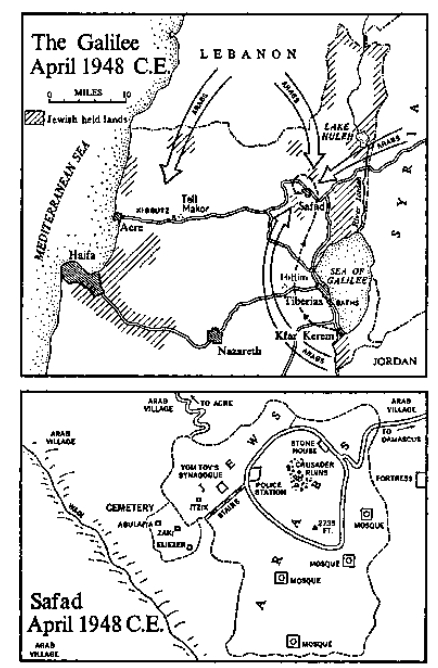

Bullet from a British rifle
Bullet manufactured in New Haven, Connecticut, February, 1943 C.E., and intended for use in World War 11. Fired from a rifle manufactured in Manchester, England, April, 1944 C.E., and also intended for use in World War II. Deposited at Makor sometime past midnight on the morning of Friday, May 14,1948 C.E.
The three had this in common: that each loved the land passionately as a man loves a woman, joyously as a child loves the dawning of a day when there is to be a picnic on the land; the sabra loved Galilee as the soil from which her people had sprung through generations uncounted; the soldier loved Palestine as a refuge after years of fighting; and the little blue-eyed rebbe loved Israel as the land that God had chosen as a site for testimony. It was during the turbulent spring days of 1948 that their three loves came into contact.
To Isidore Gottesmann, the soldier, the instructions of Moses our Teacher were clear beyond necessity for debate: “When thou goest out to battle against thine enemies… the officers shall speak unto the people, saying, What man is there that hath built a new house? … let him go and return to his house, lest he die in the battle… And what man is he that hath planted a vineyard? … let him also go and return unto his house, lest he die in the battle…” Gottesmann especially liked another commandment: “When a man hath taken a new wife, he shall not go out to war… but he shall be free at home one year, and shall cheer up his wife which he hath taken.”
Thinking ruefully of his own situation, Gottesmann looked up from the almanac on which he was working and reflected: I have a new house. I’ve planted a vineyard. And I’ve a new wife. Moses Rabbenu must have had me in mind specifically, and I want to stay at home lest I die in battle.
Then he laughed nervously: And I’m particularly covered by this injunction. Here Moses surely had me in mind: “And the officers shall speak further unto the people, and they shall say, What man is there that is fearful and fainthearted? let him go and return unto his house…”
He leaned back from his desk, where he had been compiling data from the almanac, listened to the sounds coming from the kitchen as his wife prepared supper, and shook his head. He was a tall, thin, ascetic Jew with sunken cheeks and deep-set eyes peering out from beneath dark eyebrows. He did not seem an unusually sensitive man; he was rather more reserved and self-directed than most, and he had the habit of biting his cheek and drawing his lips back from even teeth. When he quoted the Torah he used Hebrew, but his personal reflections were in German, for that had been his native tongue. He also spoke an excellent English with only a slight German-Yiddish accent: And God knows that on that last command I qualify, because I’ve grown quite cowardly. “Fearful and fainthearted” describe me exactly.
He shook his head and called, in a heavily accented Hebrew, “Dinner about ready, Ilana?”
From the kitchen of the new white-walled house came a hearty, almost masculine cry: “Tend your figures. Leave the kitchen to me.”
Gottesmann returned to his almanac and completed his calculations, placing them meticulously within the columns he had ruled in his notebook: Tonight, April 12, 1948, sun sets at eight minutes past six. Tomorrow morning, April 13, 1948, sun rises at thirteen minutes after five. Now, if we allow an additional forty-five minutes of visibility both after sunset tonight and before sunrise tomorrow, we have left… He paused to do some subtracting, then noted the critical answer: We have about nine and one half hours of darkness in which to do whatever needs to be done. Carefully he put his pencil down and slumped over the almanac. He could guess what needed to be done and who would be ordered to do it.
It was some time before he raised his head, and then he did so wearily: Moses our Teacher could have summed it up in one simple command. “What man is sick of war? Let him return to his house.” He bit his cheek and muttered, “I’m fainthearted and fearful and can do no more.”
As a sensitive boy of eleven in Gretz he had watched the great madness of 1933 sweep the Rhine, and had understood when his father shipped him to Amsterdam in 1935. When the war started he had joined a hit-or-miss Jewish underground that operated along the German border rescuing refugees. English agents, penetrating into Holland, had stumbled upon the group and had provided a hard-core leadership, giving them the job of blowing up bridges. These English had quickly spotted Gottesmann’s ability and had pushed him through their underground to Antwerp, from which he was ferried across to Folkestone and a good English education. In 1942 he had joined the British army as a stores corporal, handing out Lysol for latrines, but soon he was switched to a secret unit headed for Syria to keep Damascus out of Vichy and German hands. Later, when the fear of Rommel had evaporated, he fought in Italy; and there, meeting for the first time members of the Jewish Brigade from Palestine, he acquired their vision of a free Israel and volunteered to work in the smuggling of illegal immigrants. For nine years, 1939 through 1947, he had been at war, and now he had had enough. He was beginning to lose his nerve—if he had not already lost it—and he wanted only the creative relaxation of tending his vineyards at Kfar Kerem.
He had first seen these lovely vineyards under unusual circumstances: one winter’s day in 1944 when the German threat to Syria had dissolved, thanks to the English victories in the desert and the Russian triumph at Stalingrad, Gottesmann’s special unit was sent by truck from Damascus to Cairo, and since the convoy had been directed to use back roads it came by way of Safad, where it was halted in the mountain town by an unexpected snowstorm. The English soldiers piled out to inspect the fairy-tale corridors, crying, “Look at that old fellow from the ghetto.” But Gottesmann went by himself down the narrow alleys, thinking: This is how the Judenstrasse of Gretz must have looked when Simon Hagarzi lived there. And it was with keen pleasure that he stumbled upon the small house marked by the reverent sign: Here Labored the Great Rabbi ELIEZER BAR ZADOK OF GRETZ Who Codified the Law
Later, when he had climbed to the hilltop, the snow ceased and in the ensuing sunlight he saw for the first time the majestic hills of Galilee; how extraordinary they were that wintry morning, brown in their barrenness yet golden in the unexpected sunlight and tipped on each rise with silver from the snow. The convoluted hills twisted and turned in harmonious folds like the intricacies of music, dropping at last to the lake itself, now crystal-blue in the distance. All his life Gottesmann had known of Galilee, but he had not known that it was beautiful.
“Is this the land they spoke of?” he cried with soaring joy. “Is this what we Jews used to own?”
As he looked at the goodness he saw that clouds had begun moving in from the deserts east of the River Jordan, clouds superheated from their thirsty march across waterless sands; and as they drifted across the mountains which protected Galilee they struck the cold air of the snowstorm, so that above the lake they leaped and spun in wild confusion, reaching far into the heavens and breaking into violent patterns. And for a moment Gottesmann had the feeling that nature was showing him a summary of the future with hordes from the desert striking at the Jews of the Galilee, and the turbulence in his heart was reflected in the sky, premonitory of the violence to come, yet consoling in the towering beauty and promise of peace also to come. It was Galilee at its finest—that turbulent area in which states and religions were born; and in a kind of exaltation he climbed into his army truck and rumbled down the mountainside to Tiberias, where the captain in charge suggested, “Let’s celebrate at the hot springs,” and they had piled out to enjoy the old Roman baths at the southern end of town. Feeling unnaturally clean and fresh-eyed, Gottesmann had left the baths to walk slowly southward, coming finally to the end of the lake, where he discovered the rich fields and the sleeping vineyards of Kfar Kerem. Some men were planting grapevines, and he asked them in Yiddish, “Who owns this land?” They replied in Hebrew, “The men of Kfar Kerem.”
“What men are they?”
“We’re the men,” the farmers had replied.
“Jews? Like you?” he had asked.
“Yes, Jews like you,” the men had joked in Yiddish, which they spoke poorly.
At that moment the idea struck him: After the war I’ll never go back to Gretz. And England’s not my home. Carefully he asked the farmers, “What did you say the name was?”
“Kfar Kerem. Village of the Vineyard,” one of the men translated.
“We’re the oldest Jewish settlement along the lane,” another said. “Built years ago by a man named Hacohen,” and Gottesmann had remembered the names, the fields, the vineyards.
When his convoy reached Jerusalem on its way to Cairo, Gottesmann experienced for the first time the mystery of that city so pregnant with meaning for a Jew—“To next year in Jerusalem” the prayer of his family had been—and while the English troops explored the Arab bazaars which gave the city charm he went with a few Jewish soldiers to the Hebrew University, on Mount Scopus, and there as he looked across the hills at the wonder of his land he became aware of three pretty Jewish girls who were speaking to the soldiers in Hebrew. He indicated that he did not know the language, and the leader of the students said in imperfect Yiddish, “We hope that when the war ends you’ll come back to help us capture our homeland.”
She was a girl of seventeen, broad-shouldered, sun-tanned, with her heavy hair cut short and her khaki dress even shorter. She was the tough, muscular girl of the impending state of Irael, a true sabra—“flower of the cactus,” as those born in Palestine were called, “prickly on the outside, sweet on the inside”—but there was about her lovely face something that was unmistakably Russian. Her upper lip was thin but her cheeks were full. Her cheekbones were high and her stubborn chin was squared off, so that she did not look Jewish, and when she smiled her teeth were unusually big and white. She was like no other Jewish girl he had ever seen, strong and confident as she asked, “You will come back to help us?”
“To do what?”
She became solemn, most unlike a girl of seventeen who is flirting with strange soldiers, and said, “There’s to be war. There’s to be much fighting and we shall need your help.”
He remembered the turbulent clouds over Galilee and said, “You can’t fight all these Arabs.”
“We don’t want to fight them,” she replied, “but they’ll insist. They’ll think they can destroy us. But after we capture Jerusalem…”
“After you what?”
She looked at him with wide, lovely brown eyes. “We’ll capture Jerusalem,” she said with assurance. “We’ll need help, of course.” And she grasped his hands eagerly, crying. “Soldier, please come back.” Ashamed of her outburst she stepped back, asking, after a while, “Where is your home, soldier?”
“Germany.”
“And your family?”
“I have none.”
She took his hands again and kissed them. “In Germany you have no home. In our free Israel you do.” He was startled, and in Hebrew she spoke words that he could not comprehend but whose passion he grasped: “Here is our home! Jerusalem shall be our capital, and if they mean to war with us, we shall show them war as they have never seen it before.”
Caught by the poetry of her words, he asked in Yiddish, “And where is your home?”
“In the greatest of all Jewish settlements,” she said quietly. “At the foot of the Sea of Galilee, where my grandfather proved that Jews…”
“Kfar Kerem?”
“You’ve heard of it?” she asked proudly.
He took her handsome square face in his two hands and kissed her. “Kfar Kerem will be my home,” he said in Yiddish, “and you will be my wife.”
Like lovers from the Crusades, speaking in Bordeaux on the afternoon when the knight must sail to the Holy Land to be absent for ten years, they spoke that afternoon of the historic days facing the Jews, and her soaring patriotism communicated to him the spirit of Kfar Kerem. “I train in the army, and we shall win from the English,” she predicted confidently, “and from the Arabs, too, if they insist. We’ll have a great city here in Jerusalem and our university…”
“You’ll never hold Jerusalem.”
“We will hold Jerusalem,” she said firmly, and she walked with him to the army trucks, where she gave him her address, although he did not need it: Ilana Hacohen, Kfar Kerem. But as the trucks drew away she cried suddenly with an impassioned voice, “Jewish soldiers! Please, please come back!”
Now, on April 12, 1948, as he sat in his new house among the olive trees, he listened to the untutored clatter of pots in the kitchen. It sounded as if a child were playing at a toy stove, and he thought fondly of Ilana, his reluctant housewife. The Galilee, remote from the centers of power, seemed to be falling apart and the Jews didn’t know what to do. There was idle talk about an attack on the town of Tiberias, held by the Arabs, but bolder spirits argued that the first assault should strike at Acre, also in Arab hands. And as for Safad, the situation there was worse than desperate; it was hopeless.
The situation was this. On November 29, 1947, the United Nations meeting at Lake Success in New York, had voted 33 to 13 to accept England’s decision to hand back the mandate given her by the old League of Nations, under which she had been responsible for the government of what came to be known as British Palestine. The problem of what to do now with this vital territory reverted to the United Nations, and the responsible committee had already decided that the land be divided into three parts: inland an Arab state containing mostly Arabs; along the Mediterranean a Jewish state containing mostly Jews; and in between, the internationalized city of Jerusalem to be snared by Muslims, Jews and Christians alike, since that city was holy to all three religions.
On the morning following the announcement of this decision, the Arabs in Palestine had shown the world how they intended to comply by sweeping down upon an unarmed Jewish bus, killing five and wounding seven. Of course, this was not the first disturbance on either side, but it helped ignite an undeclared Arab-Jewish war, with each combatant fighting to gain territorial advantage against the day when division came into effect and an open war could start. During their final months of custodianship the English tried honestly to maintain some kind of peace, but as the bullets increased, as Arab village and Jewish market went up in smoke, the English made it clear that they were determined to leave. On May 15, 1948, they were quitting the land, and Arabs and Jews could partition it in warfare. As a result, in the difficult months at the end of 1947 and the beginning of 1948 the English were beset with irritating problems for which they blamed the Jews; the government in London tried to maintain a façade of impartiality, but their men on the job in Palestine found themselves increasingly partial to the Arabs, and it became obvious that all day-to-day decisions attendant upon withdrawal were going to favor the Arabs and impede the Jews.
This was only natural. The average Englishman had a personal affinity for Arabs and a distrust of Jews; but more important to the dispassionate Englishman was the fact that the Jews were pathetically outnumbered—600,000 Jews against 1,300,000 Arabs in undivided Palestine, plus 36,000,000 others determined to attack from Egypt, Transjordan, Syria and Lebanon, all of whom had common boundaries with Palestine, and from Saudi Arabia, Yemen and Iraq, which did not. English politicians could be excused if they believed that within two weeks after May 15, 1948, the last Jew in Palestine would be pushed into the sea; it would be therefore unwise to aid these misguided people in prolonging their suicide. Wherever possible, existing fortifications, equipment and physical advantages were being handed over to the Arabs. By mid-April, 1948, the outlines of the transition were clear: The British would go; the Arabs would come; the fleets of the world would stand by in the eastern Mediterranean to rescue whatever Jews escaped the final massacres. Where the survivors were to find refuge, the U.N. would have to decide.
The raw figures facing Isidore Gottesmann were disheartening. In all of upper Galilee, which he and his group were supposed to hold, there were not more than five thousand Jews. Opposed to them were not less than a hundred thousand Arabs, with some two hundred thousand more available from the contiguous Arab countries to the north and east. For example, in the villages between Safad and Acre there were exactly thirty-four Jewish boys and girls with rifles. In Safad itself, where the first blow would probably be struck, an accurate census of Jews had been made: 1,214 Jews surrounded by an estimated 13,400 Arabs. Since Gottesmann had been trained in German gymnasia and English universities, he knew that one must not associate accurate figures and estimates; nevertheless, he had worked out the fanciful ratio of 11.1 Arabs to every Jew. It was an easy number to remember, 11.1. But even it was misleading in that it represented the Jewish strength as greater than it actually was, for the Arabs not only held every high and strategic point, so that their superior weapons could be aimed downward, point-blank at the Jewish quarter, but the 1,214 Jews who were in Safad were composed largely of elderly religious people who either refused to defend themselves or were incapable of doing so. Many were convinced that God still intended to punish Jews for unknown sins and that this time He had chosen the Arabs to do His work, as in the recent past He had chosen the Germans, and before that the Cossacks under Czmielnicki and the Spaniards under the Inquisition. The Jews of Safad were doomed to die; the Torah said so. And they would sit in their synagogues and wait for the long knives as they had waited in the past.
Gottesmann looked at his gloomy figures: Of the 1,214 Jews in Safad, only 140 are armed, and only 260 in all are capable of fighting. The real proportion as between Jewish defenders and Arab attackers, augmented by reinforcements from without, must therefore be considered to be about forty to one. Yet the capture of Safad by Jewish forces was essential to the preservation of a Jewish state or to the winning of the war that would accompany its establishment. For Safad commanded the hills, and just as it had been vital to the Crusaders in 1100 CE. as a salient protecting Tiberias and the roads to Acre, and to the Mamelukes in 1291 C.E. as a point from which to control the rest of Galilee, so now in 1948 it was again a site overlooking the jugular vein of the area. Taking into consideration the overwhelming superiority of Arab numbers, the United Nations had logically awarded Safad to the forthcoming Arab state, but if it were allowed to remain in Arab hands the viability of any Jewish nation would vanish. As the days of the mandate drew to an end, Safad became the vital target for Jews in the area, and it was held by the Arabs, 11,1-to-1.
As he completed his notes he used the contemporary spelling, Safad, pronounced Sfat in one syllable to rhyme with spot. Like all the places of Galilee this fortress town had known many different names: it had originally been Sepph, then Sephet, then Safat; Crusaders had known it as Saphet, historians as Safed, the Arabs as Safad, map makers as Tsefat, and Hebrew nationalists as Zefat. In similar manner Acre had been Akka, Aecho, Ptolemais, St. Jean d’Acre of the Crusaders, and now purists were calling it Akko; but the most notable of the variations had occurred with the Sea of Galilee: at first it had been known as a sea called Chinnereth, from the resemblance of its shoreline to a harp, then Kinnereth, then Gennesaret, Galilee, Tiberias, Tverya, Tabariyyah, Tyberiadis to the Crusaders, and, to the Turks, Bahr Tubariyeh. For the English it became Lake Galilee and was to be Yam Kinneret, with the second word accented on the second syllable.
Isidore Gottesmann, satisfied that his figures on Safad were in final form, closed his folder and leaned back. He was sure that later on that evening, when Teddy Reich and his Palmach lieutenants came to review the situation, Teddy was bound to say, “We’ve got to capture Safad. Get going, Gottesmann.” The unhappy soldier smiled wryly: Everyone calls him Teddy but they call me Gottesmann. Because I look like a skinny Englishman. And because I like it that way.
He thought back upon the times when the calling of his name by some Englishman had been of critical significance: That night after we blew up the bridge inside the German border. The English major heading the underground had said in his crisp, unemotional manner, “Splendid show, Gottesmann. You’re for Antwerpen.” And that had been the difference between life and the extermination camp, for those who had not made it to Antwerp had been caught and killed. Or the night in the Belgian port when another English underground operative had called, “One more place in the lorry. Look lively, Gottesmann,” and this, too, had been the selection between living and dying, for on the following week this Antwerp ring had been penetrated by the Nazis. He also remembered the time when he had stood at attention in dirty civilian clothes as a professor announced to a motley crew, “And for the University of Norwich, Gottesmann. You did well in your papers, lad.” At graduation his German-Jewish name had been called crisply and he had moved into the British army, then into Syria and later into Italy—always at the command of British Gentiles who were generous in recognizing his merit and in granting him their approval.
But later the voices calling him had changed to Yiddish, the hard, tough voices of small, tough men: “Gottesmann, we’ve got to ship these refugees to Eretz Israel. Rent a boat at Taranto. I don’t know where you’ll get the money. Get it.” And the voice of Teddy Reich, who was even tougher and smaller than the others, all brain and sinew: “Gottesmann, you’ll take this dynamite to Tiberias and wait till the lorry…” Just before the suitcase exploded a British voice had cried with agonizing despair, “My God, Gottesmann! What have you done?”
It had been while hiding from the British after this dynamiting that he had been smuggled into Kfar Kerem, where he had made his way to the home of Netanel Hacohen. Tapping softly on the door he had aroused a tall, square-jawed Jew, who said gruffly, “If they’re chasing you, come in.”
“I met your daughter in Jerusalem.”
“She’s not here. But you must be Gottesmann and I suppose you blew up the lorry. Welcome, son.”
That night he had seen for the first time the haunting portrait of little Shmuel Hacohen, his left shoulder protruding as if he wanted to fight, his eyes flashing with notable vitality. “He was killed by Bedouins while fighting to protect this land,” Netanel explained. “When the first trouble started the others wanted to give up the vineyards and retreat to the walls of Tiberias, but Shmuel preached, ‘We’ll build walls greater than any Tiberias has seen. Out of our love for the land!’”
“Preached?” Gottesmann interrupted. “Was he a rabbi?”
Shmuel Hacohen’s son laughed. “Shmuel? A rabbi? When he died he was fed up with rabbis. There were no rabbis in this family. The Jewish state will be born when enough men like my father take enough guns and shoot down the bastards who are threatening us. When my father was fifty he organized his own little army to protect this settlement and he bought himself a donkey so that he could ride from one watch station to the next, firing his men up. The Bedouins announced to the whole countryside, ‘We’ll kill the little Jew on the donkey, and the others will run away.’ So they killed him. When we recovered his body it had nineteen bullet holes. But his faith had been so strong that no one dared run away, and after two or three battles the Bedouins left us in peace. Gottesmann, to hold this land we had to fight for it. If we want a state for the Jews we’ll have to fight for it. You did a fine thing when you blew up the lorry.”
“I asked about the rabbi business because I saw these volumes of the Talmud,” Gottesmann said.
“Those?” Netanel laughed. “Somebody sold them to my father and he kept them for good luck. Shmuel Hacohen … you could sell him anything. His preaching was simple, Gottesmann, and you remember it. No state is given on a silver plate. You buy with blood. Rabbis and governments and fine ideas will not win this land. Guns will. You get the guns, you’ll get Israel.”
And then one day, as Gottesmann lay hiding, Netanel hurried into the room, explaining, “You’ve got to get out of here. My daughter’s coming home from university,” and Ilana appeared, somewhat thinner than when he had seen her in Jerusalem, lovelier when she smiled but more serious and totally dedicated to the ideal of a Jewish state. When she saw Gottesmann packing she said, “Don’t go,” and later, when he recalled that first meeting, he remembered principally the great tenseness of her mind and body. She stood forward against her toes, not back on her heels. Her chin was held forward too, like her stubborn grandfather’s in the picture, and her eyes, unlike those of girls Gottesmann had known in other countries, were marked by lines of concentration. Above all, he remembered her tough, rounded knees as they popped out from beneath her very short dress, and he recalled how delightful it had been, in his hiding, to touch those knees and to feel this vibrant girl, so eager for life and the day’s challenge, pressing against him.
Now he laughed easily as he heard her banging about the kitchen in her last stages of preparing his evening meal. She was a dreadful cook, a typical Israeli she called herself, burning her thumbs and the meat, and she slapped food on the table as her ancestors must have slammed it on the wooden boards in their tents four thousand years ago in this very spot, when returning from their sheep in the wilderness. How excellent a human being she was, this Ilana, how strong in her resolves, and how desperately her husband wanted to stay away from the war that was engulfing him… how he longed to stay with his wife among the vineyards.
Yet in his longing Gottesmann had to admit that not even under the humane law of Moses Rabbenu was he excused from this war, for although he did have a new house and a new vineyard, he did not actually have a wife. He and Ilana were not married. In the tempestuous fashion of the day she had simply moved in with him, announcing to the settlement, “Gottesmann and I shall live together.” He had expected some kind of protest from her father, but tough-minded Netanel had summoned two witnesses before whom the lovers recited the ancient formula: “Behold, thou art consecrated unto me according to the law of Israel,” after which Netanel boomed, “You’re married. Have lots of children.” Certain cautious neighbors had suggested that perhaps Gottesmann and his girl would like to have a rabbi from Tiberias authenticate the marriage, but Ilana had cried contemptuously, “We’re through with rabbis and all that Mickey Mouse crap.”
The phrase had struck Gottesmann as inappropriate to the discussion at hand and he had asked Ilana, “Where did you pick up the words ‘Mickey Mouse crap’?” and she had explained, “When you go to the movies and watch the cartoons the hero gets into all kinds of trouble, but at the end, when terrible things are bound to happen, Mickey Mouse swings in from nowhere and saves the world. Gottesmann, it doesn’t happen that way. And for sure it’s not going to happen that way in Israel”—Ilana always spoke as if her new homeland already existed —“because nobody is going to come swinging in from anywhere, not God nor Moses nor some rabbi. So let them keep that Mickey Mouse crap to themselves. Fifteen thousand Arabs are going to come down out of those hills some day, and we’d better be ready.” Her eyes flashed and she repeated, “We’d better be ready. Not Mickey Mouse. Not some rabbi wringing his hands and wailing, ‘Israel is lost. Israel is being punished.’” Recalling that outburst Gottesmann looked down at his folder and smiled.
Behind him the door banged open. There was a clatter of feet. A tray was banged onto the table and a chair was squealed backward over the stone floor. “Food!” a husky-harsh voice shouted, and supper was served at the Gottesmann home.
Ilana Hacohen was twenty-one, not tall, not plump. Her big white teeth sparkled as ever, and as usual she looked quizzical. She obviously loved the security and repose of living with a man and she took pride in her new home. With heavy yet loving hands she pushed the crockery about the table and splashed a generous helping of food onto her husband’s plate. It was meat and vegetables, cooked as if by accident, and it made him long even for the food of English restaurants. “Eat it all,” she said, “I’m saving some for Teddy Reich.” Then, on the impulse of the moment, she leaned across the table and kissed her tall, serious-browed husband.
“You worried about Safad?” she asked.
“For every Jew in Safad there are 11.1 Arabs,” he said glumly.
“If they’re the right Jews,” she reflected.
“And the Arabs hold all the favorable positions.”
“They always do,” she said.
“And in honest fighting strength they outnumber us forty to one.”
When Ilana chewed she kept the food in small portions in the right side of her mouth and moved her jaws only slightly, so that she seemed unusually reflective, with her thin upper lip drawn tight and the lines about her eyes contracted. She thought of the odds, forty to one, and of the position of Safad as she had known it, now so critical to the Jews. “It looks to me,” she said slowly, “as if Teddy Reich ought to move his Palmach in there tonight.”
Isidore Gottesmann visibly stiffened. He stopped chewing and looked down for a moment at the white boards of the table. Ilana regarded linen as ridiculous in time of war; she didn’t propose washing table covers when there was other work to do. When her husband did not speak she said quietly, “And if Teddy decides to send his men in, you and I are going too.”
“I guessed we would,” her husband said, and they continued eating.
Ilana Hacohen knew Safad well. Her grandfather had been killed by the Bedouins long before she was born, and she had never known him, but she remembered well the happy days when her father used to take her on horseback up the steep trail to Safad, from which they could see the Sea of Galilee and Tiberias. As they stood on the old Crusader ruins her father would explain how from this spot the Jews had looked down upon the great Roman city of Tiberias, when large fleets had stood out into the lake, and of how, in later days, a group of misguided bigots had assembled in Tiberias to write the Talmud, “thus binding the world in chains.” He said that some centuries later, around 900 CE., a much finer body of rabbis had also worked in Tiberias, “compiling the only honest text of the Bible, so that Tiberias is just as important for the Christians as it is for the Jews.” But it was his opinion that the only rabbi from these parts whom one could love was Rabbi Zaki the Martyr. “He was a great and honest man,” he said, “and all could trust him.” Of contemporary rabbis, except for Rabbi Kook, he did not know many who could be so described. He told his daughter, “Always remember, in this country we have the best rabbis that money can buy.” They were a grubby, contemptible lot and old Shmuel Hacohen had decreed that none should be allowed in Kfar Kerem.
This did not mean that Ilana had grown up without religion. In her father’s house the reading of the Torah was exactly equivalent to the reading of Shakespeare in the home of an educated English family, or the reading of Goethe among Germans—except that because of its antiquity and historical power the Jews of the settlement felt that their great literary masterpiece was somewhat more effective than Shakespeare was for the English or Goethe for the Germans or Tolstoy for the Russians. Rarely a day passed in Ilana’s childhood when she did not hear some practical discussion of the Bible as the historical background of her people. She knew that Kfar Kerem stood where Canaanites had once ruled and that on their victorious return from Egypt the Jews had surged northward through the valleys to the west. She could imagine them still marching, just beyond the ridges back of Tiberias. To Ilana, God’s division of Canaan among the twelve tribes, which had taken place some three thousand years ago, was as real as the proposed United Nations division that would occur within a few weeks: Kfar Kerem stood at the junction of the portions given to Naphtali, Issachar and Manasseh, and it was from these lands that the citizens of Israel had been driven into captivity. Mount Tabor still stood as the perpetual beacon of the north, and the Sea of Galilee remained as Isaiah had described it. To the sabras of Ilana’s generation the Bible was real indeed. In her father’s vineyard she had found Jewish coins that had been issued by the Maccabees, and she could recall that day on which her father had taken her to see the recent excavations at Beth-shan, pointing toward familiar places on the Plain of Jezreel. “Why did he do it?” he had cried.
“Do what?” Ilana had asked.
“Keep his troops here at Gilboa while the enemy was camped over there at Shunem.” And he explained why the man had been a fool, a blunderer.
“Who was?” she asked again.
“King Saul,” her father replied. To the Jews of Kfar Kerem, Saul was a man of history, not a shadowy figure in a religious chronicle, and so with Gideon, David and Solomon.
Like most of her friends, whose parents were either non-religious or actively anti-religious, Ilana Hacohen bore a non-Biblical name. Hers meant tree and spoke of the ancient soil. Other girls bore evocative names like Aviva (spring), or Ayelet (fawn), or Talma (furrow). Young men were apt to be called Dov (bear), or Arieh (lion), or Dagan (cereal). Ilana was determined that when she and Gottesmann had children there would be no Sarahs or Rachels among them, no Abrahams or Mendels; she wanted no part of the old Biblical names nor of the Eastern European ones either. In fact, her only disappointment with her husband was that he kept his German name of Isidore, one relating in no way, she felt, to a modern Jewish state.
It would be difficult to say whether Ilana and her father were religious or not. On the one hand they loved the Bible as the literary textbook of their race. On the other, they despised what the rabbis had made of it. “A prison!” Netanel Hacohen cried. “And the Talmudic rabbis who worked here at Tiberias were the worst of the lot, codifying into ugly little categories all things that God intended to be free.” He also looked unkindly at the work of the later rabbis who had lived in Safad: “In their exile in Spain and Germany they picked up many bigoted ideas and came back here to force them down our throats.” There were others in Kfar Kerem who were so disgusted with rabbinical Judaism that they went much further than Netanel Hacohen. These Jews were prepared to throw out God and Moses, too.
Ilana knew some of these latter thinkers and she found their reasoning persuasive. “We are Jews,” they argued, “and it is our job to reconquer Palestine. When we do we won’t require a lot of rabbis from Poland and Russia to tell us how to govern ourselves.” Women of this group were apt to be especially vehement in their denunciation, and it was from one of these, a girl at the university who had lived in America for some time, that Ilana picked up the phrase which seemed to her the best summary of the religious problem: “that Mickey Mouse crap.”
Among Ilana’s friends a curious cult had developed which could be explained only as a combination of deep love for the Bible and an equally deep distrust for institutionalized religion as they had seen it operating among the Jews of Galilee. Many girls flatly refused to get married in the old rabbinical patterns. “Me take a ritual bath?” Ilana had protested. “I’d sooner jump in cattle water ten days old than step naked into that Mickey Mouse crap.” Her girl friends sought out the men they wanted to live with and in swift progression became pregnant, fine mothers and good heads of their families. They also refused to wear make-up, that being the prerogative of purposeless women in decadent countries like France and Argentina. It became an act of faith not to shave under the arms, to avoid make-up, to wear very short skirts, to bob the hair and to take advanced training in the management of machine guns and field mortars—if any were made available by the men who needed them. These girls also spoke only Hebrew, fluently and with an earthy lilt. Yiddish they deplored as an echo of the eastern European ghettos, and Ladino was as bad. Those whose parents knew no Hebrew consented to talk with the old folks in whatever language was native, Russian with the Russian immigrants, Polish with the Polish newcomers, but Yiddish was frowned upon. “It’s a ridiculous mark of servitude,” Ilana protested, “and Gentiles are correct in laughing at it.”
They were a tough, wonderful, exciting group of young people, and if they had surrendered formal religion, they had found a substitute equally demanding: they were dedicated to the creation of a Jewish state that should be called Israel and that should be founded in social justice. There were no communists in Kfar Kerem, and there were actually those who preferred capitalism with its ever-present chance for a man to become rich, but most were like Ilana: “Our house is not really our house. It belongs to the settlement, and if we should move away the house will go to someone else just like us, which is only right. I work in the vineyard and I think of it as mine, but it really belongs to the settlement, too, and if I leave, other hands will tend the grapes. The important thing is that the land will continue.”
This was the real mystique of the group: the land will continue. “There were Jews on this land four thousand years ago,” Ilana often said, “and I am proud to be a part of that chain. When I’m gone more Jews will live on our land, for another four thousand years. It’s the land that counts.”
She often recalled the teachings of her grandfather, which were kept alive in Kfar Kerem in a small book which was published after his death and in which he spoke of his great difficulty in acquiring land, and of its significance to the Jews who first realized that it belonged to them:
I met them as they came overland from Akka and the Arabs gathered at the gates of Tiberias to watch them struggle through, and everyone began to laugh, for they were thin and undernourished, and many of the men’s backs were bent from much study in the yeshivas of Berdichev. Not even the Jews of Tiberias thought that such people could live on the land, beset by drought in some years, floods in others, and Bedouins all the time, But I swore that the Jews of Kfar Kerem—as I had named the new settlement—would master the land. And to that purpose I drove them constantly to watch how the Arabs tilled the land, to remember what tricks the Russians had used on their fields; and weeks and months would go by without my ever hearing the word Talmud, but the word land was before us at every waking hour.
Ilana explained to her husband, “After it was evident that my grandfather was going to succeed, many religious Jews tried to join the settlement, but when they saw how determined Shmuel was to keep Kfar Kerem a farm and not a countryside synagogue, they left in disgust and went up to Safad. My grandfather never allowed a synagogue in Kfar Kerem nor any merchants, and this was the first new setüement to use Hebrew. Shmuel never mastered the language … he spoke it like a little boy, some of the old people told me. But before he died he was conducting the settlement meetings in Hebrew. My own father refused me permission to speak Yiddish, and I’m thankful now. Of course, I’ve picked up the usual number of words and I understand it, but I’d be ashamed to speak it.”
Land was the goal, the land of Canaan and Israel, the ancient fields awarded by God to Naphtali and Issachar and Manasseh. One day when Ilana was riding in an armed truck with her husband toward Acre she saw those once-great farm lands that had deteriorated into malaria-ridden swamps, and she broke into tears: “It’s a crime against the land. This is what happens when Eretz Israel falls into alien hands. We Jews have got to win back all this land, and in three years we’ll make it fertile again. We shall have to fight for it, foot by foot, but we shall win because I can’t believe that God intended…”
“You confuse me when you speak of God,” Gottesmann had interrupted.
“Why?”
“Well, yesterday you said some pretty forceful things against religion. Today you speak as if God were going to give you the swampland.”
“Don’t you believe that God has chosen us to tend this land?”
“No,” Gottesmann replied.
“I do,” she snapped, and her husband decided to drop the matter. Yet it was apparent to him that Ilana had come to identify God with the land, not differentiating between the two, and as the truck bounced along he thought: This must be the way people believed five thousand years ago when the long progression to monotheism started. “God is the land, therefore we shall worship this hill,” and almost at once they discovered that between God and His land there had to be some agent of mediation, whereupon they invented priests and the priests led to rabbis, and the rabbis led to all that Ilana hates.
Now, in his new home, waiting for Teddy Reich and the decisions about Safad, Gottesmann acknowledged to Ilana that he had come partly around to her way of thinking. As he ate the last of the meat—it was a matter of pride among the sabra wives not to serve dessert—he confessed, “In the last few days I’ve decided that you’re right. The land comes first, and after we get it we can worry about the other problems.”
“You’re talking sense!” she cried excitedly, pushing the dishes aside. Propping her elbows on the table she leaned forward and the lines of anxiety about her eyes disappeared. “When we get hold of the land, Gottesmann…” Like many sabras she always addressed her husband by his last name, but in her case this custom also reflected her dislike for his first name.
“I have a feeling,” he continued, “that the next six weeks will decide whether we get the land or not,”
“Whether!” she cried. “Gottesmann, we must get the land. Are you afraid we won’t?”
“I’m a soldier,” he explained. “I know what it means… in a town like Safad… forty on the other side to one on our side …”
“But we must,” she said quietly. In great agitation she left the table and stalked about the room, a husky girl, handsome in feature and explosive in her new-felt power. She was not a tall girl, but she seemed to encompass in her tense body the strength of the fields her grandfather had conquered and protected. “God of Moses!” she whispered. “Let us recapture our land.”
Then Teddy Reich exploded into the new house, and all things changed. He was a young, one-armed German Jew of twenty-four, without an ounce of fat or a shred of illusion. He moved like a charged wire, sputtering and jerking as if animated by some writhing inner force. He had keen, cold eyes, a spare chin and a close-cropped head of black hair. He was only slightly taller than Ilana, which made him much shorter than Gottesmann, and he possessed one of the most daring minds in Galilee. He was accompanied by four men like himself, all tough German Jews, and a fifth who seemed noticeably out of place. This young fighter was actually rotund, had a soft round face, drooping shoulders and a perpetual grin. He was Nissim Bagdadi, and his last name betrayed both his origin and the fact that he alone, of all the eight in the room, was a Sephardi Jew.
“The word on Safad?” Reich demanded. Throwing himself urgently into a chair he grabbed a pencil and listened.
“I was there two days ago,” Gottesmann began.
“Difficulty?”
“Shot at going in and out.”
“In the countryside?”
“No. In the town.”
“That’s to be expected,” Reich hurled back. Ilana gasped. Gottesmann had not told her he had been fired at by the Arabs. He rarely spoke of his war experiences. Reich noticed the gasp and looked at Ilana. “What’s the place look like?” he snapped.
Gottesmann took one of Ilana’s steep-sided bowls and inverted it on the table. “Looks like this,” he explained in bad Hebrew. “This flat part on top, the Crusader ruins, held by Arabs. From here they dominate everything. Now imagine the sides divided into six segments—a pie. The Arabs hold five. We hold one … this little one. At this upper corner of our segment there’s a rugged stone house which the British have turned over to the Arabs, and here there’s a police station which we’re afraid the British will give them, too.” Glumly the eight Jews studied the impossible situation: only one section held by their people, and it dominated by the Crusader ruins, by the stone house and by the police station.
Then Gottesmann placed a tall book in back of the bowl. Jamming his fist on top of the book he said, “And back here, commanding everything, is the big new fortress built by the British. The Arabs are already moving in.”
Impatiently Teddy Reich reached out with his one arm and swept everything aside. Book and bowl swept across the table, and the impregnable fortress, the stone house and the concrete police station were gone. “How many people are involved?” he barked.
“We have a definite count—1,214 Jews against about 13,400 Arabs. That’s 11.1 of the enemy to one of us.”
“Standard,” Reich grunted. “Will the Jews fight?”
“Two hundred and sixty might… if we can get them some guns.”
“How many have guns now?”
“One hundred and forty.”
“Better than I thought,” Reich cried. “Allon says Safad must be taken. We’ll move in that platoon hiding north of town.”
“Can a platoon do the trick?” Gottesmann asked.
“Simple,” Reich said, not looking up as he jotted notes. “Safad must be taken. To do it we can spare one platoon.” There was silence, then he added, “Gottesmann, if you left now, could you get to that platoon in the hills before dawn?”
“There’s no moon. If we push, we can make it.”
“Start now,” Reich directed as he continued his note-taking. “Tell them they must fight their way into Safad tomorrow night.”
“Very good,” was the reply, in German. If he had any emotional reaction to the difficult assignment he had just been handed, he showed nothing.
“You need any of my men?” Reich asked.
“I’ll take Ilana,” Gottesmann replied. Then he studied the four tough Ashkenazim, but decided against them. “And for our guide, Bagdadi.”
No one in the room spoke. Ilana, standing near the table, made no move.
Teddy Reich looked up from his writing, turned to inspect Ilana and Bagdadi, then nodded, after which he rose, kicked open a door and went into the bedroom, where he threw himself on the unmade bed and said, “While you’re gone we’ll use this as headquarters.” Before Gottesmann and his wife were out of the house he was asleep.
It was customary for members of the Palmach to carry, when engaged in military operations, loads of at least forty kilos each, but in view of the unusual difficulty to be encountered on this trip to Safad, Gottesmann gave himself and Bagdadi only thirty kilos each, sixty-six pounds, while Ilana volunteered to carry forty-four pounds. Normally a hike from Kfar Kerem to Safad could be handled with comfort by the well-trained Jews of the Palmach—an abbreviation for the Plugat Machatz, “striking force,” organized in 1941 to resist the threatened German invasion—for the roads were pleasant, the uphill climb invigorating and the distance only twenty-two miles; but tonight the three soldiers could not use the roads, for they were patrolled by armed Arabs who had killed several Jews attempting night missions. It was Gottesmann’s plan to start due west from Kfar Kerem, then to head north to the eastern flanks of the Horns of Hittim, cross the flat lands west of the lake and finally to penetrate the mountains on which Safad stood. It was an uphill trip of twenty-seven miles. The chances for success were not good, since four main roads had to be crossed. The countryside leading to them was rugged, and all had to be completed before four-thirty, when daylight would begin to break. If the travelers were caught in sunlight, the waiting Arabs could pick them off one by one, as they had the thirty-five Jews trapped in sunlight at Hebron.
But Gottesmann had picked Bagdadi as his third man for good reasons. The plump Iraqi was both skilled as a scout and valiant as a fighter. He knew the terrain well and had an animal sense of where an enemy might be attempting to spring a trap. Starting at a dogtrot, he quickly had his team heading away from the Sea of Galilee. Ilana, lugging a rifle and much ammunition, found no difficulty in keeping pace with the men, and whenever Gottesmann caught sight of her, head back, mouth tightly closed, he felt a rush of love for this exceptional girl who in normal times would have been at the university.
With deft maneuvers Bagdadi got his people across the first two roads leading into Tiberias from the west, then launched the hard climb up toward the Horns of Hittim, and as the sturdy trio reached the old Crusader battleground they could see below the sleeping city of Tiberias, which other Jews would try to capture within the next few days. When Gottesmann remarked on this, Ilana whispered, “May God give them victory,” but Gottesmann had already dismissed Tiberias and was thinking, as he ran, of the historic battle at Hittim which had determined so much history in this part of the world. It’s possible for a nation to make one wrong guess and lose its existence, he reflected. Is this attempt on Safad such a mistake? Bagdadi, apparently unbothered by history, pressed on, and the ancient battlefield was left behind as they headed north.
“Slow!” Bagdadi whispered, and the three Jews froze against the spring earth while a British scouting truck moved down the third of the main roads, its searchlight flashing aimlessly across the fields. Bagdadi kept everyone flat, and Gottesmann realized how much he appreciated the involuntary rest. When the light drifted harmlessly above them he noticed that Ilana had closed her eyes and was breathing deeply, but as soon as the truck passed, Bagdadi whispered, “We’re behind schedule,” and when they rose Gottesmann had to smile as his wife automatically brushed the sand from her khaki blouse and short khaki dress.
They now began a steady dogtrot along a fairly level course which carried them toward the hills but kept them well west of the main Tibe-rias-Safad road along the lake. These were the hours after midnight, and by pressing steadily Bagdadi recovered some of the time lost earlier, so that when they approached the stern hills on which Safad perched they knew that they had at least a chance of getting to the Palmach village before the sun came up. But now the going became brutal, for Safad lay nearly thirty-five hundred feet higher than Kfar Kerem, and they had to make their way through rocky fields, tempting though the nearby roadway was, but no one protested, for all could feel the still-sleeping sun almost pushing on their backs. When it rose it must not catch them in some gully.
They were now in the heart of Arab country, with small villages on every side, and Bagdadi was proving his skill in leading his team as far as possible from likely Arab marksmen. He halted the march and whispered, “From here to the last road will be difficult. Crossing it will be worse. Then we have a very steep climb. If we run into Arabs, what?”
“No firing,” Gottesmann warned. “Absolutely no firing.” He gave this order more to Bagdadi than to Ilana, for he knew her to be extremely cool under such conditions.
“No firing,” Ilana repeated, knowing what worried her husband.
“No firing,” Bagdadi promised as he started toward the road with swift head-down strides. It was difficult and painful work.
They passed one Arab village, then another, hearing only the dogs barking at the night. They came in sight of the road but held back, for it looked unusually ominous, as if snipers might be waiting, and as the three huddled in the darkness they saw something that was both exhilarating and frustrating. Above them, so close that it looked as if it could almost be touched, lay Safad, the lights of its Arab quarter brilliant in the night air. Each Jew wanted more than anything else to climb directly to the inviting town, to the critical focus of their movement, but each knew that he must duck and dodge for several more hours, must cross the dangerous road and then work his way silently into the safe hills north of the town where the Palmach waited. It was as difficult as turning away from the gates of a brightly lit dance when one was young.
“We go!” Bagdadi whispered, and they cut quickly across the exposed road and disappeared into the brown hills on the northern side, where Bagdadi kept his team running up the steep incline that would lead them eventually to the hills behind Safad.
It was now three in the morning, the eighth hour of their march, and Ilana was nearing exhaustion, but she took a small drink from a canteen that Bagdadi carried and shifted her rifle … “I’ll take it,” Gottesmann offered, but she grabbed it fiercely, bent forward and continued up the hill.
“Keep together,” Bagdadi warned. “Arab villages all around.” And for an hour, till his watch showed four, he maintained his killing pace. Even Gottesmann was finding it difficult to stay up with the astonishing Iraqi, but to fall behind would be fatal, and they pressed forward as behind them the first gray light of dawn began to break.
Now Bagdadi’s judgment became crucial. Somewhere ahead lay the village held by the Palmach, but in between stood others filled with waiting Arabs, and to pick an accurate track through the intervening land, to avoid alerting Arab sentries and at the same time to prevent Palmach scouts from firing random shots, required delicate skill. The Iraqi moved slowly, testing the route, until Gottesmann, whose nerves were almost out of control, snapped, “God, man! Move!”
Gently, as if he were rebuking a child, Bagdadi said, “This is the time when we dare not choose wrong,” and like a clever fox smelling out the terrain he picked the only path that would take them between the waiting villages.
But as they reached a spot in the center of the Arab holdings an ugly period came when the sun, weary of night, began reaching for the horizon. It was four-twenty and twilight was about to begin. It was a moment of terror, for each of the three Jews could see the visible shape of the others… far too clearly. Ilana, wanting nothing more than to rest where she was, grew frightened as she saw her husband’s face looming out of the vanishing darkness: it was the face of a man who had driven himself to the edge of endurance, and he stopped running. He could go no more.
“We must go,” Bagdadi warned.
Gottesmann refused to move. He could drive his legs no farther, and he intended staying where he was, within the nest of Arab villages.
“We’ve only fifteen minutes!” Bagdadi pleaded.
Gottesmann could not respond. He saw a depression among some rocks and sat down, while the growing dawn formed a silhouette around him.
“Get him up,” Bagdadi pleaded with Ilana. Tired as she was she went to Gottesmann and pulled on his arm, with no success.
The leadership of the venture now rested solely in Bagdadi’s hands, and emotionally he was ill equipped to exercise it, for his life had been spent, it seemed, in following directions laid down by Ashkenazi Jews: as a boy of two, the son of a large Iraqi family living in Hebron, he had watched the unbridled massacres of 1929, when Arabs had swept over that town, slaughtering all Jews in an apocalyptic fury. In the room where he lay hidden under the bed seven of his family had had their throats cut and their bodies mutilated, and although he was mercifully spared from remembering precisely what had happened, he did vaguely recall pools of blood across which he had crawled when the screaming ceased and Ashkenazi Jews came to rescue him.
He had grown up an orphan in Tel Aviv, where the superiority of the Ashkenazim went unchallenged, and of the older boys who thrashed him on the city dumps, all had been from the superior group. When he applied for jobs he found that Ashkenazim had them, and the few vacancies in schools went to them, too. In the Palmach he had received orders only from Ashkenazi officers, but now, with death imminent, responsibility for one segment of Israel’s future had passed to him.
Realizing that Gottesmann was determined to commit suicide, Bagdadi pushed Ilana away and with two sharp blows struck the fallen German Jew across the face. “You’ll run!” he said. With one jerk of his powerful arm he dragged Gottesmann to his feet and gave him a shove that started him staggering zigzag across the final half-mile separating them from the Palmach village. Turning to Ilana he barked, “Follow me,” and he twisted his way through the last of the Arab territory.
Gottesmann’s irrational behavior had wasted precious minutes and now sunrise was upon them. A shot rang out from the hills, frightening Ilana but awakening her husband, and in the next minutes his clearing eyes began to see puffs of dust as bullets struck ahead of the running Jews, and he thought: Maybe they’ll keep missing. He was not aware that it was his near-breakdown that had thrown his team into this predicament, and a bullet came close to his head, whining in protest as it missed, and ricocheted among the rocks. His lungs were heavy and his legs grew increasingly difficult to manage. He thought: This must be hell on Ilana. He looked ahead to where she was running and saw something which brought him fully back to reality. Ilana, determined to reach the village, was running as fast as she could, but in a straight line. A series of bullets was beginning to zero-in on her, and in a few more steps she was sure to be hit.
In this brief second of agony Gottesmann remembered a man named Pinsker in the German underground. Effective, cold, he had been a little man who expected to fight Nazis the rest of his life. “So when you’re running you will think yourself a rabbit,” he instructed all his men. “For the rest of your life you’re a rabbit and must run as if you knew that someone was looking down a rifle at you. You cannot imagine how a dodge to the left, a dodge to the right, will upset that man looking down the rifle. Gottesmann!” he had screamed. “You’re a rabbit.”
“Nieder!” Gottesmann himself now screamed, but to his horror Ilana kept running straight ahead. A bullet kicked dust at her left heel. He felt sick, then realized that he had intuitively used the German command nieder and not the English “take cover!” He panicked. What he wanted was the Hebrew artza! But before he could call again, Bagdadi looked back, instantly sized up the situation, and with a slight flicking of his hand indicated to Ilana what she must do. As soon as she saw his signal she threw herself flat, rolled over three times and resumed running on a new course. The next bullet struck where she would otherwise have been, and the three darting, dodging, twisting Jews escaped the Arabs and approached the village held by the Palmach.
Now it was Bagdadi’s turn to know anxiety, for in the uncertain light the chances were good that some Jewish soldier would begin firing at anything that was moving; so as he ran Bagdadi unfurled a small white flag containing a hand-stitched blue Star of David and began shouting at the top of his voice, “Palmach! Palmach!”
A quick-thinking sentry in the village sized up the situation and launched a barrage of fire at the Arabs along the ridges. The enemy was driven back and the three messengers from Kfar Kerem staggered the last hundred yards without any Arab bullets coming close to them.
When they approached the rude headquarters, gasping and pressing their ribs together, the sun was well up and they cast clear shadows on the earth. Gottesmann freed one hand and grasped Bagdadi by the Iraqi’s wet shoulder. “You know land,” he said, and before he had finished reporting to the local commander Ilana had found a place on the floor and had curled up like a little animal. After an hour’s talk he and Bagdadi lifted her, and without waking her carried her to a real bed. She slept all day.
At dusk on the afternoon of Tuesday, April 13, the Palmach men roused Ilana and her two well-rested companions. In the small village there was an air of commitment. Teddy Reich’s command to move forward, infiltrate Safad and take over the local defense forces had been so thoroughly discussed, and its difficulties so accurately assessed, that excitement and fear were pretty well spent. Now everyone knew that a platoon of thirty-three men and girls would creep through the countryside at midnight, crawl on its belly for about three miles and try to sneak into the town through Arab patrols. If the maneuver degenerated into a pitched battle, the Palmach were to return fire but to keep moving forward.
The unit was led by Mem-Mem Bar-El, a sinewy young man who wore a beard and prided himself on his somewhat flashy appearance, his sabra birth and the fact that he spoke no language but Hebrew. He was blue-eyed and red-headed, with the controlled instincts of a true fighting man. His title, Mem-Mem, was derived from the Hebrew initials for platoon commander, and for this job he was nearly ideal. His judgments were swift and clearly communicated; in their execution he was usually in the lead. In normal times Bar-El might have been a lady-killer chewing a toothpick; now he was a battle-tested leader, twenty years old.
He was accompanied by a beautiful girl of seventeen, thin, with dark eyes and clear skin. In all respects she was small; her face and body seemed more a child’s than a young woman’s, and she came only to Ilana’s shoulder, but she piled her hair high on her head, like a Frenchwoman, hoping thereby to make herself look taller. She also wore a boxlike soldier’s cap which always seemed about to topple backward, for she kept its visor pointed skyward to steal additional height. She was unlike Ilana in that she dressed with the flair of a girl who enjoyed clothes, but she was obedient to the other rules of the sabra: no lipstick, no rouge, no shaving. She served as Palmach secretary and was known simply as Vered, the Hebrew word for rose. She had joined Bar-El’s unit in the simplest way: she appeared one morning, volunteering to serve in any capacity, and now she lived in whatever quarters the Mem-Mem could find for her. When questioned she insisted, “At the end of the war I shall attend university.” Bit by bit the men pieced together the fact that she had come from the family of some important doctor in Tel Aviv, but her parents did not know where she was and she intended not to tell them until victory had been won. Sometimes the men found her crying, and this embarrassed her, but the improbable thing was that delectable as she was, she had no boy friend and permitted none to touch her; Bar-El served merely as her watchdog. Gottesmann was surprised, therefore, when this frail child slammed shut the folding table-desk used by the Palmach as its headquarters, hefted it easily in her left hand, then reached with her right for a rifle and loaded on her back additional gear until she had the normal thirty-kilo marching load for girls. He felt an impulse to lean down and kiss her as he would a child, and say, “You can put the toys down, Vered,” but she let him know that she intended marching through the wadis to the relief of Safad.
The Jews ate a late meal, then closed down the village as if they had gone to bed normally. Some members who were not making the assault on Safad paced the outskirts on normal guard duty, stopping occasionally so that they could be seen by Arab patrols. A few dogs raced through the alleyways, barking sharply, and in all possible respects the village was kept ordinary; but shortly before midnight Mem-Mem Bar-El assembled his unit and with swift, quiet movements the twenty-six men and seven girls disappeared from the village and lost themselves in a deep wadi running north and south from Safad. No Arab had seen them.
Working silently the Palmach moved single file down the steep banks of the wadi, lugging one Sten gun, a Vickers machine gun stolen from the English, a Mauser, a Garand, an armful of Czech rifles and revolvers from many sources. In the middle of the unit plodded a small donkey loaded with four Hotchkiss guns. Three of the younger boys were covered with web equipment stolen from a Scottish unit. Gottesmann, in charge of the rear, thought: I’d enjoy hearing what an English sergeant-major would say of this troop. Then he looked up to see the lofty lights of Safad as he had seen them the night before, and he realized that the unit was well below the elevation of its starting point and far below its objective. The rest of the operation would be uphill with eighty-eight pounds of equipment.
Now came the first danger. All the Jews were in the bottom of the gully, working their way cautiously southward toward the Jewish section of Safad, and if anything went wrong they would be trapped, with the enemy holding all the high positions. Furthermore, the bottom of the wadi was a natural pathway, so that any patrols that might be operating from the Arab part of Safad must surely intercept them. Yet Gottesmann approved the perilous disposition of the Jews. If they were going to penetrate Safad, they could do so only by this method. In the meantime, if one were religious, he could pray. None of the men Gottesmann knew was doing so, but each held his rifle at the ready.
Silently the Jews moved down the wadi. At one point Bar-El muttered to Gottesmann, “Now for the hellish part. Maximum stringing out.” If the Arabs were alerted, this would be the time for them to strike.
Bar-El jumped. Gottesmann felt his throat tighten in an involuntary spasm. A weird, terrifying cry sped through the wadi, echoing back and forth from one wall to the other. Ilana gasped and reached out to grab Gottesmann’s arm. The sound was sickening, fearful. Only Bagdadi was at ease. He chuckled: “Jackals. They smell the donkey.” Any Arabs who were listening found the sound familiar and in no way suspicious. Sweating, the Jews moved forward.
They were now ready for the quick move toward Safad, and it was necessary to consolidate the strung-out troops, so the Mem-Mem halted while the rear caught up. After consulting with his guides Bar-El whispered, “Cemetery.” The prior briefing had been so thorough that each segment of the platoon knew what to do.
In three units the Jews fanned through the old cemetery: one to the left past the tomb of Rabbi Abulafia, the greatest of the Kabbalists; one to the right past the tomb of Rabbi Eliezer of Gretz, who had codified the law; and another toward the honorary tomb of the greatly loved Rabbi Zaki the Martyr, who had died in Rome. Perhaps it was because these long-dead saints protected the Jews, perhaps it was because the Arabs could not believe that such an attempt could be made, but more likely it was because the Arabs had been lulled by the British announcement that they were withdrawing on April 16—the day after tomorrow—and taking all Jews with them… for one of these reasons Mem-Mem Bar-El was able to sift his men silently across the cemetery without detection.
Crash! A shot rang out from the Jewish sector. It came from the sturdy old synagogue of Rabbi Yom Tov ben Gaddiel. From the Arab quarter random replies were made, and Gottesmann thought: Damn, there’s going to be a real fusillade. The Palmach men, cursing, dropped. Bar-El dispatched two guides into the town to halt the Jewish firing.
Silence. The men and girls inched forward. They were almost safe… almost in Safad.
“Now!” Bar-El shouted, and the remaining thirty-one scrambled madly out of the cemetery and into the sanctuary of Safad.
As soon as the Jews hit the narrow alleys Vered’s high, girlish voice broke into song, wild, exulting: “From Metulla to the Negev, From the desert to the sea, Every youth is bearing arms, Every boy should be on guard.”
Up and down the streets of the Jewish quarter the Palmach went, shouting its battle songs.
“Break into three groups!” Bar-El cried, and toward the edges of the Arab quarters the soldiers marched, singing the song of the Jewish fliers: “Batsheva, Batsheva, the song is for you, From Dan to Beersheba we shall not forget. From the heights we will send you a song. Let us drink ‘L’hayim’ with the whole Palmach.”
“Start someone shouting that two thousand Palmach have arrived,” the Mem-Mem directed, and little Vered went running through the streets, her childish voice crying, “We’re saved! Two thousand brave men. Through the Arab lines.” Soon the citizens of Safad were repeating the cry, but Isidore Gottesmann was standing silent, his eyes and ears filled with love as Ilana Hacohen and Nissim Bagdadi directed a group of Palmach and Safad youngsters in a parade led by the donkey. Ilana sang the song which so hauntingly caught the spirit of the Jewish movement in which girls like Vered, no more than children, offered their lives for freedom: “Danny-leh, Danny-leh, Eat your banana-leh.”
It was the pleading voice of the indulgent Jewish mother, coaxing her fat little boy to stuff himself one mite more. As she sang the nonsense words Ilana’s voice was like that… filled with love and the joy of having made it to Safad.
As dawn broke that Wednesday morning a surge of hope echoed through the narrow streets of Safad: “The soldiers have arrived!” And Jews who the previous afternoon had been choosing between massacre or exile were now free to weigh a third alternative, victory, and throughout the town men resolved to hold out a little longer. In all Safad there was rejoicing.
In all Safad, that is, except in the Ashkenazi synagogue controlled by Rebbe Itzik of Vodzh. In its narrow confines ten old men with long black cloaks and curls dangling beside their ears stood praying. The previous afternoon the British government had offered them safe-conduct to Acre, but they had determined not to leave Safad.
Their leader was a thin, small man, a Russian Jew who forty years before had brought his flock from Vodzh to Israel so that its members could die in the Holy Land and, when the Messiah came, escape the dark and tedious underground burrowing from Russia. He had piercing blue eyes and bushy eyebrows, long white curls and beard. His flattened hat was trimmed with fur and his drooping cloak repeated in every detail the garment decided upon by Polish Jews three hundred years before. His hands were white and wrinkled, and when a young boy came bursting into the synagogue, shouting, “Rebbe! Rebbe! Jewish soldiers have arrived. A whole army,” the little man ignored the news, merely clasping his hands more tightly and bowing his head. His nine followers did likewise, their ankles and knees pressed closely together, as the Talmud directed. They prayed that the children of Israel might be patient when the Arabs fell upon them. They prayed that God would accept their souls when the long knives flashed. And they prayed that they might soon be one with Moses our Teacher, with great Akiba and with the gentle Rabbi Zaki, who had known the meaning of God.
After a moment the boy shrugged his shoulders and ran off to cry his good news elsewhere.

Excavating was interrupted, insofar as Cullinane was involved, when a team of archaeologists from Columbia University dropped down from a dig they were conducting at the ruins of Antioch in southern Turkey to check the finds at Makor. At a luncheon meeting at the kibbutz the director of the Columbia team caused considerable pleasure by stating, “Word of what you’re doing down here has circulated through the profession. What with levels reaching all the way back from Crusader times to the beginnings of agriculture, you have a good chance to make this a classic dig.”
Cullinane nodded and said, “With two assistants like Eliav and Tabari we’re not going to lose much material that could be salvaged.”
“Are you an Arab, Mr. Tabari?” one of the Columbia men asked.
Cullinane deferred to his Arab assistant, and when Tabari merely smiled, he explained, “If you understand Arab names you’ll appreciate it when I tell you that Mr. Tabari’s real name is Jemail ibn Tewfik ibn Faraj Tabari. His family gave him those names to remind the world that he was not only the son of Sir Tewfik Tabari, the top leader of the Arab community during the English occupation, but also the grandson of the great Faraj Tabari, the governor of Akko. He was famous for having rebuilt much of that city.”
“Doesn’t Tabari come from the same root as Tiberias?” one of the Columbia men asked.
“In Turkish it’s the same word,” Jemail explained.
“But you decided to stay with Israel?” the New York professor continued.
“Yes,” Tabari said abruptly. He had no objection to discussing the matter of his allegiance, but he knew that to Cullinane and Eliav it was old hat, and he himself was bored with it.
The New Yorker studied the three archaeologists in charge of the Makor dig and changed the line of conversation completely: “Don’t you men find it… Well, with fifty-five million Arabs or whatever it is breathing down your neck… Well, I’ve been reading the inflammatory pronouncements coming out of Cairo and Damascus and Baghdad. That they’re going to drive you into the sea? Massacre every Jew. If they did this, wouldn’t it go pretty hard on an Arab like you, Tabari?”
And suddenly Cullinane realized that this reasonably intelligent professor was aware that those who worked in Israel lived under the hammers of history, under the constant threat of annihilation, but he seemed not to be aware of the parallel fact that he in New York and his brother in Washington lived under precisely the same threat.
* * * * *
Next afternoon began the long debate that would determine the character of the state that was struggling to be born. It started because Ilana Hacohen and Isidore Gottesmann were assigned living quarters in a small house that stood next to the historic shoemaker shop that had once been used by Rabbi Zaki the Martyr. By the people of Safad this shop was regarded with affection, and by tradition it was reserved for the home of some rabbi. In 1948, when the Jewish-Arab conflict was drawing to its climax, it was occupied by the Rebbe of Vodzh.
The Yiddish word rebbe had originally signified an elementary-school teacher who taught religious classes in Hebrew in the villages of Poland and Russia; but later it had become a specialized word identifying those gifted rabbis who operated within the tradition of Rabbi Abulafia of Safad: the mystics, charismatic leaders and inspired tzaddikim of eastern European Hasidism, the unique rabbis who gathered about them devoted followings. Two men would speak: “My rebbe can uproot mountains with his interpretations.” “Yes, but my rebbe can cure all manner of sickness.” The Jews of Vodzh said, “Our rebbe understands the Talmud better than any other rebbe. He is the well that gives water without losing a drop.”
Even as a young man in Vodzh the rebbe had been recognized as one specially destined for a holy life, and word spread among the Jews of Russia and Poland that a worthy successor had finally been found to the great Rebbe of Vodzh, who had died a martyr in the pogroms of 1875. The young man’s piercing blue eyes seemed to cut through to the essential moral problems that men faced, and he became widely known as Itzik, Little Yitzhak. At twenty-four Little Isaac felt no hesitation in condemning the richest Jew in Vodzh for a miserly act which contravened the teaching of the Talmud, and it had been his energy alone that had organized the mass exodus of his loyal followers to Safad. How difficult that had been, to bring those seventy people back to Eretz Israel, except that thirty years later most of the Jews who had not followed him from Vodzh were dead in the gas chambers of Oswiecim.
In Safad, Rebbe Itzik had established a new home for his followers. Along the narrow alleys his Jews had found abandoned houses which they rebuilt into clean homes. Living on alms from America they had acquired one of the ancient Ashkenazi synagogues, not the sturdy one of Rabbi Yom Tov Gaddiel’s but an adequate refuge, and through the years they had prospered in their modest way. The Vodzher Jews they were called, and although some of the younger people had left for livelier towns, the rebbe’s group still contained some sixty people determined to worship God according to the Torah as interpreted by their Vodzher Rebbe.
His theology was simple. He believed literally the great commandment of Moses our Teacher: “Now therefore hearken, O Israel, unto the statutes and unto the judgments, which I teach you… Ye shall not add unto the word which I command you, neither shall ye diminish ought from it, that ye may keep the commandments of the Lord your God which I command you.” To Rebbe Itzik this commandment was lucid and all-embracing. It meant exactly what it said. A Jew should keep the law as handed to Moses by God. That law was found in the Torah, which contained 613 specific orders ranging from the first noble words at the beginning of Genesis, “Be fruitful, and multiply” to the last tragic commandment to Moses our Teacher as he lay dying in sight of the promised land: “Thou shalt not go over thither.” Encompassed between this nobility and tragedy lay all the law that man required, the lists in Leviticus, the repetitions in Numbers, the final summations in Deuteronomy. These laws Rebbe Itzik knew by heart and their words were sweet: “And if a stranger sojourn with thee in your land, ye shall not vex him.” “If a man vow a vow unto the Lord, or swear an oath to bind his soul with a bond; he shall not break his word, he shall do according to all that proceedeth out of his mouth.”
Upon these laws of the Torah a man must build the general pattern of his life. The ritual to accompany his birth was explained and the manner of his burial was laid out. His love for a woman was hedged with decent precautions, and his relations with his son, his business and his king were set forth; and Rebbe Itzik was satisfied that a Jew must live precisely within this body of law, and he had put together a congregation of sixty people prepared to do so.
The life that Rebbe Itzik had devised for them was somewhat different from that followed by the other Jews of Safad. In dress they were conspicuous; they looked like archaic ghosts in long black cloaks, flat fur-rimmed hats, shortened trousers and heavily ribbed stockings. They wore beards and black skullcaps and for some perverse reason preferred walking with the stoop that had characterized them when they were forced to live furtively in ghettos. Their daily life was much the same as that followed by Jews in Safad four hundred years before, with frequent synagogue attendance and strict devotion to complex dietary laws. And on Shabbat, starting on Friday afternoon, they stood especially apart from the rest of Safad, a little group of devout Jews living around Rabbi Zaki’s old shop.
No fire could be lit, no light used. No food was cooked, no vehicle moved. A man could walk only two thousand paces from his home and he could carry nothing; if he had a cold and needed a handkerchief he could tie it around his wrist and make believe it was a piece of clothing, but carry it he could not. On this day a man could not even carry his prayer shawl to the synagogue. The boy children of Rebbe Itzik’s group were especially differentiated from other young Jews by the long and often delicate curls dangling in front of their ears and by the four-cornered shawls which they dropped over their heads and wore under their shirts. The shawls bore fringes in accordance with God’s Torah: “Speak unto the children of Israel, and bid them that they make them fringes in the borders of their garments… that ye may look upon it, and remember all the commandments of the Lord, and do them.”
But powerful as he was in dictating the life of his community, Rebbe Itzik was not arrogant; he never assumed that he was wise enough, by himself, to interpret God’s Torah, and it was his constant responsibility to study the Talmud, finding therein the guidance that had kept Jews together for more than fifteen hundred years. Each day of the year, excepting only the Ninth of Ab, when they mourned the loss of Jerusalem by staying up all night to read Lamentations, the male adults of the Vodzher group assembled at the synagogue to study Talmud, and since all lived on charity contributed from abroad, the men were free to sit in circles about their rebbe as he expounded passages from the massive volumes. One of the Vodzher Jews once wrote to Brooklyn: “If I have a dream of paradise, it’s to sit in the synagogue on a wintry night in Safad, when snow is on the ground, and the lamp is flickering, while our rebbe expounds Talmud.”
Rebbe Itzik knew the great book virtually by heart, and members of his congregation liked to boast: “Our Vodzher Rebbe can do this. You take a volume of the Talmud and pierce any six pages with a pin. Our rebbe can look at the first page, close his eyes and tell you what eleven additional words your pin has gone through.” The Talmud by which he lived provided answers to any conceivable problems, although sometimes, in the middle years of the twentieth century, one had to wrench meanings a little here and there to uncover a relevant legalism, but he was not averse to doing so, for he found the great compilation surprisingly contemporary: “Rabbi bar Mehasia said in the name of Rabbi Hama ben Goria who said in the name Rab: If all the seas were ink, and all the reeds were pens, and all the skies were parchment, and all the men could write, these would not suffice to write down all the red tape of this government.”
But the most remarkable characteristic which set Rebbe Itzik and his little group apart from the other Jews of Safad was their determination never to use Hebrew except as a holy language. From the Torah and Talmud they had derived the conviction that Hebrew would be used for common speech only after the arrival of the Messiah and that until such time it was reserved for religious purposes; and in furtherance of this belief Rebbe Itzik pointed out: “Observe that in the Talmud itself, only the Mishna, the law of God, is written in Hebrew. The Gemara, the explanation of ordinary rabbis, is inscribed in Aramaic. What the Talmud refused to do, we also shall refuse to do.”
Therefore, outside the synagogue, the Vodzher Jews spoke only Yiddish and they held it to be offensive when others spoke to them in Hebrew. Occasionally Rebbe Itzik had scolded people who addressed him in that language, and he went so far as to refuse his followers permission to ride on any train run by the English government, since the tickets were printed in Hebrew as well as in Arabic and English.
As long as Palestine remained in British hands the peculiarities of Rebbe Itzik’s group occasioned no difficulty. In Jerusalem, Jews of similar persuasion in obedience to the Talmud sometimes stoned ambulances that tried to move on Shabbat, but in the Vodzher part of Safad the streets were so narrow that no car could enter, and even that cause of irritation was avoided. But in 1948, with the likelihood of an eventual Jewish state, problems developed.
Rebbe Itzik viewed with apprehension the idea of such a state in Palestine, and to imagine one bearing the name of “Israel” was repugnant. He told his associates, “The idea’s an outrage. It must not be permitted.” He became so violent in his rejection of statehood for the Jews that he threatened to become a nuisance, and when some young men of his congregation actually ran off to Kibbutz Makor to fight with the Palmach he deplored them as if they had converted to another religion. “There must be no Israel!” he protested.
To support these curious reactions Rebbe Itzik found authority in the Torah. Repeatedly God had condemned the children of Israel to exile among other nations: “And I will scatter you among the heathen… and your land shall be desolate, and your cities waste.” Jerusalem was to be occupied, which meant that the Arabs, in holding the Holy Land, were acting as God’s agents, and to oppose them was sacrilegious. Furthermore, the Holy Land would revert to the Jews only when the Messiah appeared; then Hebrew could be spoken generally, and for ordinary human beings like the Palmach to try to force the coming of the Messiah was presumptuous. There must be no state of Israel, no Hebrew, no resistance to the Arabs. There must be submission, prayer and resignation; and if Arabs chose to massacre, that also was God’s will.
Fortunately for Mem-Mem Bar-El and his Palmach, only a handful of Vodzher Jews held these extreme views, for even among the little rebbe’s immediate followers about half listened when other leaders like Rav Loewe and Rabbi Goldberg advised: “The Palmach serves as an instrument of God’s will. Co-operate in every way, for this time we shall fight the Arabs.” When Rebbe Itzik was advised of what the other rabbis had said he folded his hands and looked at the ground. “They do not understand God’s will,” he whispered sorrowfully.
The argument started toward noon on Thursday, April 15, when Ilana Hacohen, refreshed from hours of victorious love-making with her husband, came into the narrow street that ran past Rebbe Itzik’s home. As she left her new quarters, a rifle slung across her shoulder, she brushed back her bobbed hair, straightened her very short skirt, and happened to see the mezuzah nailed to the doorpost in conformance with the law of the Torah. Sensing the days of trial that lay ahead she reached up and touched it. As she did so, she happened to see in the street the tense little figure of Rebbe Itzik.
“For good luck!” she said in Hebrew. “We’re going to need it.”
To the little rebbe, everything this brazen girl had done was an outrage. She appeared like a wanton. She carried a rifle. Obviously she was fighting for a state of Israel. She had touched the mezuzah as if it had been an ordinary Christian idol. She had referred to it as a mere good-luck omen. And she had addressed him in Hebrew. With contempt he turned his back on her and walked away.
Ilana Hacohen, reared on the fighting principles of her grandfather and her anti-rabbinical father, reacted on impulse. To the astonishment of the benevolent dictator, she grabbed him by the shoulder and wheeled him around so abruptly that his hat fell off. “Don’t you rebuke me,” she warned.
Rebbe Itzik was not accustomed to opposition, and the unprecedented action of the sabra stunned him. He stooped, tried to recover his hat but awkwardly kicked it farther from him. As he rose he found his eyes opposite the brazen bare knees, then staring up at the girl’s tanned, insolent face. Irrelevantly he cried, in Yiddish, “You’re not even married to that man in there, are you?”
“If you speak to me,” Ilana snapped, “use the language of the land.”
The infuriated rebbe started to reprimand her and she started to answer back. Her defiance attracted a group of the rebbe’s congregation, and an old man cried, “Whore! Don’t dare to address our rebbe.”
Ilana swung to face her accuser, and as she did so the butt of her rifle whipped close to the rebbe’s cheek, and he drew back. The newcomer thought his rebbe had been struck and he started to reach for Ilana. Deftly she grabbed her rifle with two hands and parried the clumsy effort.
The noise drew Gottesmann to the narrow street, and he quickly deduced what was happening. He knew Ilana’s feeling toward the ultra-orthodox, whom her grandfather and father had derided, and he could guess the rebbe’s reaction to her, a soldier of the emerging state. He caught his wife and pulled her back into the house. Then he took her place in the street and tried to mollify the outraged Jews.
Speaking Yiddish, which quietened things somewhat, he told the patriarch, “Rebbe, we’ve come to save your town—if we can.”
“Only God will determine whether Safad stands or falls,” the rebbe replied.
“That’s true,” Gottesmann agreed.
“But we’ll help Him along,” a young passing Palmach fighter cried in Hebrew.
Gottesmann, seeking to ease this new blow, assured the rebbe in Yiddish, “The important thing is, we must work together.”
The insulted rebbe retreated to the shoemaker’s house, where his loyal supporters consoled him. At the same time Gottesmann retired to the house next door, where he told Ilana, “We’re here for one job, Lan. Don’t be sidetracked.”
“We’re here for two jobs,” she corrected. “To win a nation and to see that it gets started right. You let that old fool …”
“That’s not the word,” her husband protested. “Just stay away from him.”
“I will, if he stays away from me.”
But on the next day fresh trouble broke out. It was April 16, 1948, and the English were evacuating Safad. The captain in charge of trucks, a fed-up veteran from one of the mill towns in England who understood neither Arab nor Jew, marched wearily into the heart of the Jewish section, attended by four tough Tommies with submachine guns. He summoned Rebbe Itzik and some of the other elders, while Mem-Mem Bar-El remained hidden behind a wall as Gottesmann translated the English for him.
The British officer shouted, “Jews of Safad, in one hour we’re leaving. Your situation is hopeless. You’re a thousand. The Arabs waiting over there are fourteen thousand. Fresh troops moved down last night from Syria. If you stay, dreadful things are going to happen. We offer you—all of you—safe-conduct to Acre.” He waited.
Rebbe Itzik moved forward, “We’ve held a meeting,” he said, indicating the ten Jews of his congregation. “And we have decided that the Vodzher Jews will stay here.” The British officer groaned and wiped his forehead. Then Itzik added, “But the people of Rabbi Goldberg and Rav Loewe are free to leave with you.”
The Englishman turned to these two rabbis and said, “You’ve made the right choice.” He started shouting orders under which all the Jews could ride his trucks into Acre, and after his instructions had been repeated in both Hebrew and Yiddish a few old men and some mothers with babies began preparing themselves to move through the Arab lines to the trucks.
“All of you!” the officer bellowed. “Get going!” He started pushing the people toward the protected exit route but he was peremptorily halted by Mem-Mem Bar-El, who appeared dramatically with a rifle, backed up by ten Palmach men.
“No Jew will leave Safad,” he announced quietly in Hebrew. There was consternation. When the British officer heard Gottesmann’s translation he showed his incredulity. As for the would-be refugees, they took the command as a death sentence, while Rebbe Itzik held it to be insulting for a man with no authority—a stranger in Safad—to contradict the decision of the rabbis that the old and young could leave.
“No Jew leaves Safad,” Bar-El repeated.
“This is highly irregular,” the Briton fumed. “Who are you?”
“Mem-Mem Bar-El,” Gottesmann interrupted. “Palmach.”
“How’d you get in?” the Englishman asked.
“Right through your lines,” Gottesmann laughed.
“But, man! You’re overwhelmed.” The tired Englishman indicated the four compass points. “Surrounded. Outnumbered. Starving.”
“That’s right,” Gottesmann said. “All the Arabs have to do is come in a few steps and capture us.”
The officer shrugged his shoulders and pleaded, “At least let us take out the children.”
“You heard him,” Gottesmann said, indicating Bar-El.
The Englishman ignored the Mem-Mem and asked Gottesmann, “You educated in England?”
“Norwich.”
This seemed to make a difference to the Englishman, and he pleaded, “You know they intend to kill you all? They’ve told us so.”
“We’re not evacuating.”
“Let us take the cripples and sick.”
Mem-Mem Bar-El understood the plea and snapped, “We stay together. As we did at Massada… at Warsaw.”
The Englishman licked his dry lips and said, “I’ve been trying to prevent a massacre. Now it’s on your head.”
“It’s on all our heads,” Bar-El replied simply. “Your mother’s and my uncle’s. You English have done everything possible to destroy Palestine. When you leave… in a few minutes… you’ll turn all the installations over to the Arabs, won’t you? Arms, food, everything.”
“I’ve been ordered,” the Englishmen explained apologetically. “It’s been agreed that the Arabs should have this town.”
“And you worry about a massacre.” Bar-El spat contemptuously.
“In these matters we have to be impartial.”
“Goddamn your impartial soul,” Bar-El said hoarsely. Gottesmann refused to interpret this, but one Englishman who understood Hebrew started forward. A Palmach girl stopped him.
Gottesmann said, “You’re so dreadfully wrong about Safad. It will not fall.”
Bitterly the Mem-Mem added, “Turn the keys over to the Arabs and when you’re back home remember the name. Safad. Safad. Safad.” He spat on the ground and led his men away.
Gottesmann walked with the Englishman to the edge of the Jewish quarter. “I meant what I said,” he repeated. “We’re going to take this town.”
“May God bless you,” the Englishman replied. He could say no more, for now he must turn all fortified positions, the food supplies, the field glasses and the extra armament over to the Arabs. Nearly two thousand additional troops had moved down from Lebanon and Syria to be in on the kill. Six thousand well-armed Arabs were determined that not one Jew should escape.
Immediately after the parting two things happened. The tired Englishman said to one of his assistants, “It’s the first time I’ve ever seen Jews ready to fight back. They’ll last three days. Pray for the poor bastards.” And an Arab sniper, seeing Gottesmann neatly framed in an alley, fired at him, but the bullet missed and the final battle for Safad was engaged.
In the dining hall one clear October morning Cullinane asked, “What did a Jew who had served with the English think of their behavior in 1948?”
It was an ugly question which most people avoided, for if the British had succeeded in their plan for turning Palestine over to the Arabs, Jews would have hated them forever; usually the topic was side-stepped. But Eliav had often considered it and had developed certain generalizations which he was willing to discuss.
“Normally,” he began, puffing at his after-breakfast pipe, “I don’t mention the matter, so I’m not sure my thoughts are consistent, but the English did represent a goodly portion of my life and I’d be stupid not to have acquired some ideas. Briefly, when the English picked me up I was a rough, uneducated tyke and they made a man of me. During their war against the Germans they treated me with dignity, and I grew almost to love them. During our war against them they behaved with notable crassness, and I had to fight them. Looking back on everything, I’m perplexed.”
“Let’s take your ideas one by one,” Tabari suggested. “First, they gave you manhood.”
Eliav nodded. “You could make it stronger. They gave me life. They rescued me from Europe. Educated me, gave me this Oxford accent which helps me so much in impressing American archaeologists. Imagine what you could do with it in Chicago, John!”
“I do very well with a fake Irish brogue, thank you,” Cullinane observed. “Remember, Chicago is an Irish Catholic city, not an English one. But tell me this, did the English ever admit you to full partnership?”
“I’ve thought about that. You know, some Jews have risen to positions of great power in England. Disraeli reached the top. Sir Herbert Samuel did pretty well. Leslie Hore-Belisha. It’s remarkable, really.”
“But did they accept you?” Tabari asked bluntly.
“For a few moments during the war, I thought so. But I was fooling myself.”
“Rather curious,” Tabari reflected, “because we Arabs who went to Oxford always considered ourselves full-fledged English gentlemen. Still do.”
“You didn’t fight them later,” Eliav said.
“Correct. We fought on their side, so our feeling was strengthened. There was another curious factor…” He was about to offer an obiter dictum but apparently thought better of it and pointed to Eliav. “Your second point. That during the war they treated you well.”
“They did,” the Israeli said. “They taught me how to fight a guerilla war, how to organize a military unit… everything. In the War of Liberation I had to do some fairly ugly things against the English, but I always said, ‘Tommy, old boy, you taught me how to do this.’ And I found that they had taught me right.”
“You’ve no bitterness?” Cullinane asked.
“None,” Eliav said. Then, after drawing on his pipe, he added, “And I suspect I speak for most Israelis.”
“Wait a minute!” Cullinane protested. “I’ve been reading some Israeli books and their scorn for the English pro-Arab policy … Why do you suppose a bunch of Jews blew up that lorry full of English soldiers at Tiberias?”
Eliav took a deep breath, studied his pipe which now rested between his palms, and said, “Let’s talk about that lorry. It was blown up, as you may recall, in retaliation for English blundering at Akko. I don’t believe you should leap to the conclusion that the lorry could have been destroyed only by Jews who hated Englishmen. The men who did the job may have respected England very much.”
There was a clatter of dishes as the kibbutzniks cleared away the tables, then Tabari resumed: “You said that during World War II you grew almost to love them. That’s a funny statement for a Jew.”
“I meant that after my escape from Germany… When I appreciated what horrible things were happening…” Eliav paused, then added matter-of-factly, “We were a large family. Few survived.”
Cullinane gripped his chair and thought: Sooner or later it smacks you in the face. I’ve known Eliav for all these months and now he tells me that he lost most of his family. In a restaurant you start to give a crude waitress hell. Then you see tattooed on her arm a Bergen-Belsen number. He bit his lip and said nothing.
Tabari, possibly because he had been educated in England, was not affected by Eliav’s last statement. “So everyone has a sorrowful story. What’s it got to do with the discussion?”
Eliav, like most Israelis, appreciated this impersonal reaction and said, “This. In the worst days of the war, when I was serving here in Palestine…”
Tabari interrupted. “You’re one of the few Jews I know who calls it ‘Palestine.’ I thought that was frowned upon.”
Eliav smiled. “When I’m speaking as a member of the British army I use their name. As an Israeli I’ll take it most unkindly if you call my homeland ‘Palestine.’ Well, anyway, when I served here and watched Rommel’s Afrika Corps coming at us through Egypt, and other Germans trying to reach us through Syria…” He stopped, puffed his pipe and said with great reserve, “If the British had not held desperately—you might also say heroically—six hundred thousand Jews would have been gassed to death in Palestine.” He relaxed and added lightly, “I rarely pray, and when I do I usually leave God and Moses out of it. But I have frequently asked blessings for Field Marshal Montgomery. I’m sure neither of you can imagine how I feel about him.” He tapped his pipe and said, looking at the floor, “It was a very near thing, gentlemen.”
Cullinane asked, “Then you’re able to differentiate between Englishmen who fought with you and Englishmen who fought against you?”
“Of course. Because I must differentiate between my two selves. The Jew who learned all he knows from the English and the Jew who later fought them with all his dedication.”
“You’re able to keep your many selves straightened out?” Tabari asked sardonically.
“You go nuts if you don’t,” Eliav laughed. “How do you keep your various responsibilities as an Arab Israeli …”
Cullinane interrupted. “It’s good hearing a Jew speak of these matters. As an Irishman I feel just about as you do. I must acknowledge that in the world at large the English have accomplished wonders, but in Ireland …” He threw up his hands. “I’m sounding like an Irish politician in Chicago, but what I mean is, in Ireland they never had a clue. They operated from an entirely different intellectual base.”
“You’ve made my speech,” Eliav said, “and now let’s heckle Tabari.” He relit his pipe.
“One more thing,” Cullinane protested. “I know why they went wrong in Ireland, but why did they go wrong here?”
The Jew finished lighting his pipe and in the interval Tabari leaned forward as if he were going to speak. Eliav, noticing this, deferred, but Tabari bowed and said, “Hyde Park is yours.”
“To understand the English in Palestine,” Eliav reflected, “you’ve got to understand which Englishmen came here. Then you’ve got to study those Englishmen against the Arabs they met, and against the Jews.”
“Precisely,” Tabari said with malicious pleasure. “Point is, Cullinane, we saw two types of Englishmen in Palestine. The poor, uneducated second-raters who couldn’t be used at home and who weren’t good enough for important posts like India. Don’t forget, our little Falastin was truly a backward place of no importance, and we got the dregs.”
“True,” Eliav nodded. “The other group, of course, were absolutely top-drawer. Biblical experts, Arabic scholars, gentlemen of broad interests. Now how did these two different types of Englishmen react in Palestine?” He deferred to Tabari.
“On this I’m the expert,” Tabari joked, “because my family used to hold drills… I’m serious. My father would gather us together and coach us on how to treat the stupid Englishmen. I can still hear him lecturing: ‘Words are cheap, Jemail. Use the best ones you have. Effendi, honored sir, excellency, pasha.’ He advised us to call every army person colonel unless we recognized him as a general. I had an Oxford education, but I used to take real delight in calling some pipsqueak from Manchester effendi. I developed an exaggerated ritual of touching my forehead and chest as I bowed low and said, ‘Honored sir, I would be most humbly proud if you would so-and-so.’”
“What do you mean, so-and-so?”
“Well, I judged whether or not he knew Arabic, and if he didn’t, I ended my sentence, Kiss me bum, and the stupid fool would show his teeth and grin and give me anything I wanted. The Arab corruption of the average Englishman was criminal.”
“And on the same day,” Eliav added, “this befuddled Englishman would meet a Jew from Tel Aviv who dressed like an Englishman, acted like an Englishman. Except that the Jew was apt to be better educated. Here there was no effendi nonsense, no floor-scraping. The Jew wanted to talk legal matters or Beethoven or the current scandal. And there was one additional thing the Englishman could not forgive. The Jew insisted upon being treated as an equal.”
Tabari laughed. “Under the circumstances, who can blame the lower-class Englishman for preferring the Arab?”
“With the upper-class Englishman the problem was different,” Eliav said. “They came with good degrees. Usually they spoke Arabic, but rarely Hebrew. And all had read the great romantic books which Englishmen insist upon writing about the Arabs. Doughty—you ever read any of his daydreams? T. E. Lawrence, Gertrude Bell.”
Tabari said, “Yes, we Arabs have enjoyed about the best public-relations men in the world, all Englishmen. And tell him about the photographs.” The Arab fell into an exaggerated pose, right arm over chin, fingers extended poetically. With his left hand he threw a napkin over his head as a burnoose, and all in all looked rather dashing.
Eliav said, “The other day Jemail and I were reviewing some two dozen books on this area and in every one the English author was photographed in full Arab regalia. Robes, turban, flowing belt.” The men laughed, and Eliav concluded, “One of the worst intellectual tricks pulled on England was that photograph of T. E. Lawrence in Arab costume. Damned thing’s hypnotic.”
“Helped determine British policy in this area as much as oil,” Tabari suggested.
“If the truth were known,” Eliav said, “I’d bet that even roly-poly Ernie Bevin had hidden somewhere a photograph of himself in Arab robes.”
“But can you imagine any self-respecting Englishman who’d want himself photographed as a Palestinian Jew?” Tabari held up his hands in disgust.
The archaeologists winced at the image as a kibbutznik slammed up, growling, “You gonna sit here all day?”
“We may,” Cullinane said drily.
He did not embarrass the kibbutznik, if that had been his hope. “Just wanted to know,” the boy said, sweeping away the dishes in a clatter.
“I’ll keep my cup, if you don’t mind,” Cullinane protested.
“No point,” the kibbutznik said. “Coffee’s all gone.” Cullinane drummed on the table to control his anger and the boy went off whistling.
“There was one additional factor,” Tabari began hesitantly. “It doesn’t appear in official reports, but in this part of the world it was rather potent.” He leaned back, then continued, “Many Englishmen who came here had enjoyed homosexual experiences. At school. In the army. And they were predisposed to look at the Arab of the desert, who had always been similarly inclined, with fascination if not actual desire. If one was a practicing homosexual, what could be more alluring, I ask you, than an affair with an Arab wearing a bedsheet? You and he on two camels riding to the oasis. A dust storm raging out of the desert and only two date palms to protect you. One for him, one for you. Blood loyalty and all that. Some very amusing things happened in this part of the world in those years, I can assure you.”
“I wouldn’t have raised the subject,” Eliav said quietly, “but since Jemail has, I must say he’s not joking. Now suppose you were an avid homosexual, John…”
“We’ll suppose nothing of the sort,” Cullinane protested. “You forget it was Vered who interested me, not Jemail. Please to keep the names straight.”
“What I was saying,” Eliav continued, “was that if you were a young Englishman filled with romantic ideas and you stepped off the transport in Haifa, where would your sympathies …”
“Sympathies, hell!” Tabari protested. “Who would you want to go to bed with? Mustaffa ibn Ali from the Oasis of the Low-Slung Palms or Mendel Ginsberg who runs a clothing store on Herzl Street?”
Cullinane found the conversation preposterous, so he asked, “Considering the circumstances, you agree that the English did a reasonably decent job in Palestine?”
“Yes,” Eliav said.
“Speaking as an Arab,” Tabari added, “I think only the English could have handled things as well as they did.”
“Then you’ve no bitterness?” Cullinane asked the Jew.
“With history I never fight,” Eliav replied. “With the future, yes. And when I was fighting the English they represented the future. I had to oppose them.”
“Tell us the truth,” Tabari pleaded, as if he were a child. “Aren’t you generous in your present judgments because of the fact that when you served with the British army… wasn’t some officer… let’s say, a little extra nice to you? Come on, Eliav. We’ll understand.”
“Curious thing is,” Eliav replied, “they were all damned decent and I shall never forget it.”
* * * * *
Through the middle of Safad, running from the concrete police station down the hill to the cemetery containing the graves of the great rabbis—Eliezer, Abulafia, Zaki—stands a handsome flight of stairs built of finely dressed limestone. Its 261 steps, arranged in twenty-one separate flights, are wide and its whole appearance is one of solidity and permanence. These stairs will be long discussed in Israeli history, for they were built by the English for the express purpose of separating the Arab quarter from the Jewish, and there have been some to argue: “See! The English went out of their way to erect an official barrier between Arab and Jew. They made the division permanent, for by keeping the two groups apart they were able to play upon the fears of each, thus retaining for themselves the right to govern. The steps created new differences that would not otherwise have developed, and maintained old differences which would otherwise have dissolved. If you want a monument to English venality in Israel, look to the 261 steps of Safad.”
But it was also possible to argue: “We have historical records of Safad dating back to shortly after the time of Christ, and many different governmental systems have operated during that time, but so far as we can ascertain, there was always a quarter in which Jews lived by themselves and another in which non-Jews lived. There were synagogues and churches, then synagogues and mosques, and each held to his own. All that the English did in building their flight of stairs was to acknowledge existing custom and to externalize in concrete form a tradition as old as the town itself. The handsome flights of stairs did not divide Safad. The divisions of Safad called forth the stairs. Perhaps the time may come when the stairs can be dismantled, but this could not have been done during the English occupation.”
And the impartial voice of history could have argued: “The truth lies somewhere in between. I can remember periods extending into centuries when Jew and Arab shared Safad in easy harmony. In the early days of Muhammad this was so. In the period of the Kabbalists there was no friction. And even in this century, prior to the great massacre of 1929, Jews felt free to live in the midst of the Arab quarter. On the other hand, I can recall periods of desolation. The Crusaders killed off every Jew in Safad. In 1834 there was a pitiful slaughtering, and I do not believe that Englishmen were governing in Saphet at that period. At this date who can remember exactly why the beautiful stairs were built? All I know is that from 1936 through 1948 the stairs kept two warring people apart; and at night, when the revolving searchlight on the police station flashed down the stairs, Jews and Arabs alike were afraid to cross over and molest the other.”
But on April 16, 1948, things changed swiftly, and as the English, in a stirring ceremony, handed the Arabs the keys to all the fortresses, all the high, protected points in town, and marched away with bagpipes playing, it became obvious that the war for Safad would begin at the stairs. If the Jews could hold there, they had a chance to hold the town.
Whiiiiiing! Zaaaaah! Across the fine gray stairs the Arab bullets began to whine. The withdrawing English had assured London that all Jews would be massacred within three days. The Arabs believed they could overrun the area in two. From all sides a constricting, dense, concentrated pressure began to strangle the Jewish quarter and during the first half-hour of fighting many Jewish families had evacuated the houses nearest the lovely stairs. Arab spotters cried, “They’re falling back.”
Zaaaaaah! Unnnnnnh! The bullets splattered into the mud walls of the Jewish houses and after an hour of fighting no Jews could be seen on the other side of the flight. The Arab commander, knowing what a psychological shock the capture of a bridgehead across the stairs would be, gave the order to move out, and in company force the assault was launched. “Itbah il Yahoud—Slaughter the Jews!” cried the Syrians, the Iraqis and the Lebanese as they leaped across the open space.
In the next few minutes Jewish boys and girls seemed to appear from everywhere, for Mem-Mem Bar-El, anticipating this Arab move, had his people well stationed. Moving out from a deserted house Ilana Hacohen fired with deadly calm. Little Vered in her boxlike hat came darting in with her submachine gun spurting. Gottesmann and Bar-El loomed up from a pile of rubble, throwing grenades, while from a roof smiling Nissim Bagdadi fired with cruel effect. The astonished Arabs fell back. They tried to drag their wounded across the stairs, then abandoned them.
“Cease fire!” Bar-El shouted, and the Jews retired. Along the stairs there was no sound but the whimpering of a young Arab from Mosul. And in the Arab quarter men were whispering, “Girls were fighting. With guns.” That night each side acknowledged that if there was going to be a massacre of Jews in Safad, it would not come easily, as in the past.
In the days that followed, Mem-Mem Bar-El issued orders which mobilized the Jewish population of Safad for the task of fortifying the outer rim. Trenches were to be dug connecting vantage points; houses had to be torn down to deny them to Arab snipers; roadblocks were required; and one hundred and seventy-three armed Jews dug in to hold off the assault of some six thousand Arab fighters. Every man and woman had a job to do, and Bar-El sustained in the town a kind of stubborn optimism.
But he failed to impress Rebbe Itzik, who refused to participate in the ungodly work. Each dawn he and his ten fur-hatted elders repaired to the Vodzher synagogue to contemplate the imminent destruction of Safad, and from a repetitious history they were able to select precedents for the manner in which a doomed body of Jews should behave in the last minutes before they perished. Judaism was the only religion with a specific prayer to be uttered “when the knife was at the throat, when the flames were at the feet,” and through the centuries this final reiteration of belief had been used “to lend sanctification to the Holy Name of God.” Peculiar grace had always been accorded those who died at alien hands while still proclaiming belief in the oneness of God, and Rebbe Itzik determined that when the Arabs finally overran the Vodzher Jews a new chapter would be added to the glorious record of Jewish martyrdom.
He was therefore disturbed on Monday morning when he found at his synagogue only seven Jews. “Where’s Schepsel and Avram?” he asked. He noticed that Shmuel was the other absentee. One of the old men said, “They’re breaking rocks,” and the little rebbe rushed out of the synagogue to locate his followers. He found them working under the direction of Mem-Mem Bar-El, breaking rocks taken from demolished houses. The resulting stones were to be jammed in between boards, thus providing bulwarks that would stop rifle bullets. Many cartloads of stones were needed to protect the Jewish houses facing the stairs, and the three Vodzher Jews were doing the job with sweat pouring from beneath their fur hats.
“Schepsel!” the rebbe cried. “Why aren’t you in synagogue?”
“I’m working to hold back the Arabs,” the old Jew replied, and no argument that Rebbe Itzik could advance sufficed. Three of his battalion were gone.
Later that morning he received an additional shock, for he found Ilana Hacohen, gun over shoulder, organizing the young girls of his congregation into a defense team, whose job it would be to carry stones to the old men and to provide meals for the Palmach.
“Come back, little Esther!” he called, but the girls had found a more inspiring leader, and the old man shuddered when Esther shouted to him, “Ilana says that when the next rifles come I can have one.” The girl, Avram Ginsberg’s daughter, was thirteen.
But when Ilana had her girls well organized she did an unexpected thing: she stopped by Rebbe Itzik’s home intending to explain what was being accomplished in defending Safad, for the Mem-Mem had growled, “See if you can win the old goat over.” When she pushed open the door to the shoemaker shop she was met by the rebbe’s old wife, a Russian peasant woman who was cooking soup. Ilana tried to speak to her, but the rebbetzin knew only Russian and Yiddish, and Ilana refused to use the latter language. In a moment the rebbe appeared, surprised to find the armed sabra sitting in his home. The meeting was bizarre, for as an ultra-orthodox rebbe he deemed it improper either to touch or to look at a woman other than his wife, so that when they finally spoke it was as if each sat in a separate room.
“We drove away four Arab sorties last night,” said Ilana in Hebrew.
“It is the will of God that Israel should be punished for its sins,” he replied in Yiddish.
“But not by Arabs.”
“In the past God used Assyrians and Babylonians. Why not Arabs?”
“Because the Assyrians could defeat us. The Arabs can’t.”
“How dare you be so arrogant?”
“How dare you be so blind?”
On Wednesday, during the third day of their renewed discussion, Ilana had the distinct impression that in some contradictory way the little rebbe took pleasure in what she was doing, for apropos of nothing that had been said he cried, “The daughters of Israel are fair,” and to her surprise she replied, “We’re trying to build an Israel you will be proud of.” He looked at his folded hands and said, “Can you accomplish this if you are so arrogant? Why don’t you marry the tall Ashkenazi?” And her stubborn reply, in Hebrew, distressed the old man: “We are married.”
Nevertheless, the slight rapport increased when Ilana brought Vered with her, and the rebbe came upon them as they were eating the rebbetzin’s herbs and boiled water. “Of one thing I am proud,” the little man said.
“The barricades we’ve built?” Ilana asked.
“No,” Itzik replied. “The fact that in all Safad, when food is so scarce, no Jew operates a black market.”
“If he tried,” Vered said, “Mem-Mem would shoot him.”
“How old are you?” the rebbe asked, looking out of the corner of his eye at her almost childlike appearance.
“Seventeen,” Vered replied.
“Is your father religious?”
“Yes. He doesn’t know where I am.”
“His heart must ache,” the rebbe said, muttering a prayer over the two girls.
Then the rapport was shattered. On the evening of April 23, the beginning of their second Shabbat in Safad, Mem-Mem Bar-El felt in his bones that the Arabs were due to attack, and he feared that the attempt would be made on Saturday, when it was logical to suppose that the Jews would be at worship, so on Friday afternoon he summoned all available hands to erect an additional barrier; and the Jews were silently moving boards and rocks when Rebbe Itzik loomed out of the growing darkness.
“What are you doing on Shabbat?” he demanded in Hebrew.
“Building a wall,” Bar-El replied.
“Stop!” the little man cried.
“Rebbe, go home to your prayers!” Bar-El pleaded. The outraged rebbe sought to prevent the men from continuing their work and it became apparent that his protests might alert the Arabs, so the Mem-Mem clamped his hand over the little man’s mouth, swung him around and passed him along to Nissim Bagdadi. “Get him out of here,” Bar-El ordered.
The Iraqi Jew, weighing at least twice as much as the rebbe, easily carried him away from the urgent work and lugged him to the shoemaker shop, where he called for Ilana, telling her, “Keep him home. We’ve got to build a wall.” So Ilana went to the rebbe’s house and sat with him, grimly silent, until the emergency work was completed. Toward dawn the old man predicted in Yiddish, “God will curse that wall. God will curse any army that works on Shabbat.”
But the real crisis came with Passover, when Arab pressure was heavy and Mem-Mem insisted that two critical rows of houses be strengthened with bulwarks, even if other houses had to be torn down to provide the rocks. Work commenced on the eve of Passover, and Rebbe Itzik, hearing the hammers and the shovels, became frenzied. He ran among the bending workmen, the fringes of his shawl brushing across their eyes and reminding them of their own fathers at prayer on this holy day. He pleaded with them to desist from profaning the day, but they pointed out that Rabbi Goldberg and Rav Loewe, recognizing an hour of peril, had granted full permission to transgress either Passover or Shabbat. “So we’re working,” the men replied.
Now the decision of Rabbi Goldberg and Rav Loewe was one honored by nearly two thousand years of Jewish history, for the Greeks and the Romans, knowing of the Jews’ refusal to move on Shabbat, had always tried to select that day for their major offensives and by this tactic had won easy victories until the rabbis of Akiba’s time had pronounced the principle that when a man or a nation was in peril of its life any provision of the Torah might be put in abeyance, except those regarding murder, incest or apostasy. Mem-Mem Bar-El, relying upon that judicious precedent, had appealed to the rabbis for a declaration that the present siege was such a mortal moment and they had agreed. The soldiers could work. But to Rebbe Itzik the law was holier than the preservation of an unborn state which had no right to exist, and he stormed the streets calling down imprecations.
“Get him out of here,” Bar-El pleaded, and again Ilana was given the job of keeping the old man at home; and in these moments of tension occurred a most regrettable incident, one that Ilana would often wish had been avoided.
She and Bagdadi led the rebbe home, fending off a few of his devoted followers who wanted to know, “What are you doing with our rebbe?” Bagdadi returned to the front, where the work continued. In the shoemaker’s room, where Rabbi Zaki the Martyr had offered his common sense to the people of Safad, llana sat with the blue-eyed Rebbe of Vodzh and balked almost all he tried to do.
“I should be at the synagogue,” he protested.
“You were at the synagogue,” she said, “and you left to make trouble. Sit down.”
“Do you think that God will bless a state that works on Passover?” he threatened.
“We’ll get the state, then we’ll worry about God and His Passover,” she replied.
The blasphemy was horrible. “Unless we go back to the old ways, any Israel you get will be ashes in the mouth.”
This kind of reasoning disgusted Ilana and she asked, contemptuously, “Rebbe Itzik, do you really believe that obsolete ideas generated in Poland three hundred years ago represent the will of God?”
“What do you mean?” the old man sputtered.
“The uniform you wear. There was never anything like that in Israel. It’s straight out of the Polish ghetto.”
“The fringes…” the rebbe cried.
“That coat,” she interrupted with amused disgust. “That didn’t come from Israel and we don’t want it here. That fur hat. That blackness. That gloom. All from the ghetto.”
Rebbe Itzik stepped back, appalled. This brazen girl was challenging the symbols of his life, the honored traditions of ten generations of holy men in Vodzh. “This is the dress of God,” he began.
“Don’t tell me that!” she cried, cutting off his claim. “It’s a badge of shame forced upon us by Gentile overlords.” It was then that she lost her control for a moment, so appalled by what this frightened little man proposed doing to her impending land of Israel. Unfortunately, she chanced to look at the rebbetzin, standing by the fire—where Elisheba of Gretz had stood, caring for her three orphaned children who had later accomplished so much in Israel—and in a moment of fury Ilana brushed her hand across the old woman’s head, knocking her hair to the floor. The rebbetzin stood in shame, her bald-shaved head exposed in all its knobs and veins. Her wig lay on the stones.
“May God forgive you,” the rebbe whispered in a voice of anguish, terrified to think that any Jewish girl would do such a thing. He stooped, picked up the wig and returned it to his wife. The rebbetzin placed it clumsily on her bald head, then felt for the edges to adjust them to her temples. She looked pathetic and ridiculous and her husband gave the wig a small twist, setting it right.
“Get out of here,” he whispered hoarsely in Yiddish.
But Ilana, having done the thing, refused to move. “Where is such a custom in Talmud?” she cried. “In medieval Poland they used to shave the heads of brides so that Gentile noblemen wouldn’t demand to sleep with them on the wedding night. To make them ugly… repulsive to everyone but their husbands. So to this day you make your brides shave their heads to make them ugly—then you buy them wigs to make them beautiful. What kind of Mickey Mouse is this?”
“Get out of here,” the rebbe whispered again. “A Jewish girl who would insult an old woman. What kind of Israel are you building?” With unexpected force he pushed the Palmach girl, the bobbed-haired sabra, from his house.
Ilana stood in the dark street for some minutes and heard from nearby houses the sounds of Passover celebrations, conducted in this hour of travail. What had she done? She saw the baldheaded rebbetzin, with her wig in the dust. Suddenly she pressed her face into her hands and shivered, for she was spiritually alone.
She was standing thus when Gottesmann came back from the building for some food, and he pulled her hands down from her face and saw that she was crying. “What’s happened, Lan?” he asked.
“I struck…” She could not form the words, but her husband guessed that they had to do with the Vodzher Rebbe, so he kissed his wife and told her to stay where she was. Gently pushing open the door he entered to speak with the rebbe, and after a while came back, very soberly, saying nothing, to take Ilana’s hand.
“Where are we going?” she inquired.
“To apologize.”
“No!” she protested.
“You come here,” he whispered with fire in his voice. He dragged her back unwillingly and placed her before the old rebbetzin. “My wife wishes to apologize,” he said in Yiddish.
Silence. Twist of the arm. Silence. Another twist. Then in Hebrew, “I’m sorry…”
“In Yiddish,” Gottesmann whispered.
“I’m sorry,” his wife repeated in Hebrew. He twisted her arm again, hurtfully, and she said for the third time in Hebrew, “I’m sorry. In the street I cried for shame.” She pulled her arm away from her husband’s grip and covered her face.
Gottesmann, mortified by the scene, was about to take his wife from the room she had insulted when the old rebbetzin intervened, “Children, it’s Passover,” she said. “You shall greet Elijah here.” And she forced both Gottesmann and Ilana back into the center of the room to help her celebrate what she suspected would be her last Passover. “Find the leaven!” she whispered with the excitement of her youth, and Gottesmann felt a great lump rise in his throat as he realized that this old woman on this Passover of doom had secreted bits of leavened bread about her house, even though she could not possibly have known that she would have visitors. So, halfway between panic and fantasy, he poked into obvious places and cried, like a child years ago in Gretz, “Mother! I’ve found some leaven you overlooked,” and with embarrassment, as if she were a careless housewife, she burned it in the fire, as the Torah commanded.
Thus the house was purified. She brought her guests rickety chairs and served the pitiful shreds of food she had set aside for this holy feast: the bitter herbs, the unleavened bread, but no meat, for Safad was starving. She had, however, managed to find two beets, from which she had made one weak cupful of the traditional red soup symbolizing the Red Sea: in old Russia she had made bucketfuls for Passover. Then her husband tied his belt tightly, put on his sandals and took a stave, so as to be ready for immediate departure should the Lord command, and the four celebrants wrapped bits of unleavened bread in small parcels to be slung over their backs as if they, too, were fugitives fleeing Egypt. And finally the rebbe poured a little Safad wine into their glasses, after which he prayed, “‘Blessed are you, O Lord, our God, King of the universe, who has kept us alive until this moment.’”
To Gottesmann the moment was unbearably painful. The last Jewish feast he had attended in Gretz with his large and illustrious family had been the Passover of 1935. His Great-Uncle Mordecai had read kiddush that night and fifty-five glasses of wine had been poured, for Scholem the novelist, for Yitzhak the professor of chemistry, for Rachel who had pioneered social work in Hamburg, for five rabbis, two poets, three musicians and a handful of honest businessmen. It had been a Passover of singing and sorrow, for Gottesmann’s father had foreseen what must transpire and later that week had sent his son Isidore to Holland. Fifty-five glasses had been filled with wine that night as the great family sang, “One kid, one kid for two zuzim,” and of the fifty-five all but two were to die in the holocaust. “Who has enabled us to reach this moment,” the Vodzher Rebbe prayed, and Gottesmann felt that he could not accept this moment; he experienced a recurrence of the dizziness that had overtaken him that morning in the heart of the Arab villages. Very carefully he placed both hands about his wineglass to control their shaking.
When the prayer ended the rebbetzin left the table and opened the door slightly, so that a stranger passing in the street might have access, while her husband poured a fifth glass of wine and placed it aside, should the stranger enter; and then began one of the profound, sweet moments of Jewish life, which that night saved Gottesmann’s sanity. At Passover, which is a joyous feast celebrating the deliverance of Jews from Egyptian bondage and their flight into freedom, it was customary for the youngest male child of the family to ask in a song-song voice four traditional questions whose answers would explain Passover, and having no male children the rebbe and his wife and Gottesmann turned to Ilana, as their loved child, and she blushed.
At the agnostic settlement of Kfar Kerem the Jewish holidays had not been celebrated, for the hard-headed followers of Shmuel Hacohen had come to believe that much of Jewish religiosity was both archaic and an insult to reason; but if individual families wished to observe Passover, which did memorialize freedom, they could. Netanel Hacohen and his wife had never done so, but at the homes of friends Ilana had several times celebrated the noble holiday, so she-at least knew the rough outline of the ritual. Hesitantly she whispered the famous preliminary question: “‘Why is this night different from all other nights?’” Then in a soft voice she asked the first question: “‘Why on other nights do we eat leaven, but tonight only unleavened?’” The other three Jews chanted an answer and she stumbled her uncertain way through the second question: “‘Why on other nights do we eat all vegetables, but tonight only bitter herbs?’” Again the listeners chanted the explanation and she started the third question.
She forgot what it was. Gottesmann blushed as if he were a nervous father whose child was being watched by hundreds. The rebbe fidgeted. Finally the rebbetzin pointed openly to her hands, whose washing was the subject of the third question, but Ilana thought she was indicating a chair. “Oh, yes!” she cried brightly, like a happy child. “‘Why on other nights do some sit relaxed and some sit uneasily, while tonight all sit back in comfort?’” It was the fourth question but no one corrected her, for a burst of gunfire came from the Arab quarter and Gottesmann leaped to his feet, grabbed his rifle and was gone through the open door.
Acting on reflex Ilana also jumped from the Passover feast and reached for her gun, but she was halted by the rebbetzin. “This is the night of Passover,” the old woman said, forcing Ilana back into her chair. Then she went to the door, and again cocked it open as her husband passed on to that portion of the feast at which he asked, “‘Why do we leave the door open? Why do we pour the extra glass of wine?’” and Ilana was required to answer in the lovely fairy-tale nonsense of tradition that the door was left open for the Prophet Elijah to join this feast, and by tradition all turned to watch the half-opened door to see if just once Elijah might appear; but when Ilana looked she prayed that it might be not Elijah but Gottesmann. The firing grew heavier.
When the legendary songs were ended, with the rebbe’s high voice singing of the joy the Hebrews had known when escaping to freedom, even though it was the freedom of the desert without water or food, the celebration reached that strange and very Jewish moment when all present chanted what appeared to be only a nursery rhyme: “One kid, one kid That father bought For two zuzim.”
With a joy unbroken by the hammering of Arab bullets the rebbe and his bewigged wife sang of “the angel that slew the butcher that killed the ox that drank the water that quenched the fire that burned the stick that beat the dog that bit the cat That ate the kid That father bought For two zuzim.”
Neither Elijah nor Gottesmann came through the door that night, so the three waiting Jews sat at the table through the long hours and inaugurated that probing dialogue between the blue-eyed rebbe and the suntanned sabra which was to continue through the eight days of Passover and into the beginning of May, days when it seemed as if the compressing Arabs must crush the Jews at last, days during which only an extraordinary heroism kept the Jewish quarter of the old town viable. That the Jews of Safad resisted was a miracle, truly it could be called only that, for from all vantage points the Arabs poured down a steady rifle fire, picking off any Jew who moved unwarily. Yet somehow the stiff-necked Jews hung on, outnumbered, outgunned, outmaneuvered; and during this heroic defense of an area that could not possibly be held, but which all were determined to hold, Ilana and Rebbe Itzik talked.
REBBE in Yiddish: Do you really believe that against God’s expressed will you can establish a state of Israel in the Holy Land?
SABRA in Hebrew; Yes. Men like my husband …
REBBE in Yiddish: How do you dare to call him your husband? You’re not married.
SABRA in Hebrew: I call him my husband because my father summoned two neighbors, and in their presence announced, “My daughter is married. Have lots of children.” Isn’t that the way Jews were married on this land four thousand years ago? Were there rabbis then?
REBBE: Years pass and people grow wiser. Through many centuries the Jews found it best that their daughters marry in a certain way. Formally. With community sanction. You’re not strong enough to live by your own laws. But you will be strong if you follow our sacred traditions. If you marry your tall Ashkenazi legally. As wise persons do.
SABRA: You keep speaking of traditions. It’s I who am going back to the great traditions of this land. To the traditions of the patriarchs… Moses… Aaron… Jacob, men who lived in freedom. It’s you who want to ignore those traditions and substitute ugly little tricks picked up in Poland and Russia, where Jews lived like pigs.
REBBE: YOU may not respect countries like Poland and Russia, but for two thousand years the Jews of the world have been forced to live in such countries. What happened to them there has determined their history, their character. Would you erase Maimonides, who lived in Egypt? And Baal Shem Tov, who lived in Poland? And the Vilna Gaon, who lived in Lithuania?
SABRA: Yes. We’re going to build a new state here, not a pale copy of something that was pitiful even when it existed in Poland and Lithuania. We want new laws, new customs, new everything. And we insist that this newness be based upon the Jews as they were in ancient times. On this land.
REBBE: But what existed then has meaning only in terms of what took place in the intervening years. Of all the Jews who have ever lived in the world, nine out of ten never saw Israel. Are you going to pick your tradition only from the one-tenth who happened to live here?
SABRA: Yes. If the nine-tenths got so badly off the track we’d better forget their errors.
REBBE: And you’re willing to throw over all the wisdom accumulated in the Talmud?
SABRA: Yes. You rabbis have made of the Talmud a prison of the spirit, and if we have to surrender what goodness there is in the Talmud to break out of that prison, we’ll do so. Then go back to pick up what’s good and necessary.
REBBE: Do you believe that one generation of Jews will have sufficient wisdom and moral insight to rebuild what it took our greatest minds, Akiba, Maimonides, two thousand years to construct?
SABRA: These are radical times. If we choose wisely we can rebuild.
REBBE: Don’t you respect the Talmud?
SABRA: NO. When my grandfather came to Tiberias nearly seventy years ago he was stripped naked and beaten by the Talmud scholars in that town. They said his idea to put Jews on the land was folly. When he brought over a settlement from Russia the Jews took one look at the land he had selected and they all wanted to run in behind the walls of Tiberias and study Talmud. They had escaped one Talmudic ghetto but sought refuge in another. Anything that does that to a people is wrong.
REBBE: Have you forgotten what Maimonides said about Jews as they built a nation? “Attach your nation to a true thing which shall not alter or be destroyed, and raise your voices in a faith that shall never fail. In this covenant stay, in this religion hold fast, in this your faith remain.” Is there a better counsel?
SABRA: No. But you have said that you’re against the state, so why worry about its form?
REBBE: I am always concerned about what Jews do.
SABRA: SO if we have a state, you want it to be as old-fashioned as possible?
REBBE: I want all Jews to live within the fence of the Talmud. Have you forgotten what the great Rabbi Akiba said? The fish were having a difficult time with the nets in the stream and the fox called, “Leave the dangerous water. Come up on land,” and the fish were about to do so when their leader asked, “If we are having a difficult time in the water, which is our element, how much more dangerous will be the land, where the fox waits to eat us?” If Jews have difficulty within the Talmud, which is their element, how much worse will they be without it?
SABRA: My real complaint against the Talmud is my father’s… and my grandfather’s. That rabbis with narrow consciences interpret it. The Torah says simply, “The seventh day is the sabbath of the Lord thy God: in it thou shalt not do any work…” That’s straightforward. But the rabbis write whole books about what a man shall not do on Shabbat, and when Safad is about to fall to the Arabs you bring out those books to halt sensible work. If we win an Israel for you, do you expect to enforce each detail of those many books?
REBBE: Whether I leave Safad alive or not is God’s will. If we die, we shall die as we have died in the past. But if I am to be saved, I shall insist that Israel observe every law that God gave us.
SABRA: As interpreted by you?
REBBE: YOU frighten me when you rely so arrogantly upon your personal judgment as to what will be good for the state you plan.
SABRA: Not my judgment. The judgment of all who bring the state into being.
REBBE: Don’t you know what has happened to Jews when they relied upon their own illumination? When they by-passed the Talmud? Up this street used to live one of the most alluring Jews of history, Dr. Abulafia. Assisted by others of similar power he developed a mystical insight into the nature of God. An insight which he made available to every man. Each man his own rabbi. God talking personally to each man as he talked to Moses our Teacher. Perhaps new commandments to be delivered direct from God without the searching analysis and intervention of the rabbis.
SABRA: Would you as a rabbi veto what God himself has spoken?
REBBE: Of course. God tells us what is good for the world and the rabbis study his word to determine what is good for man.
SABRA: Then if our state has an elected parliament like England, or a congress like the United States, you would be willing for a group of rabbis to review their laws and say what should be obeyed and what should not?
REBBE: Of course. Someone must do it, and this is what rabbis are trained to do. Because in the days following Dr. Abulafia, when each man was his own rabbi, who came upon us offering his credentials and crying that he was the Messiah but Shabbetai Zevi? A Turkish Jew from Smyrna. Given to fits of exhilaration and depression. And his movement swept through the Jews of Europe, so that men in Vodzh were convinced that in 1665 the world would enter paradise in compensation for the Czmielnicki massacres of the decades before. Those were exciting days, wonderful for Jews … and then you know what happened? Shabbetai Zevi, the savior of the Jewish people, was captured in Constantinople and before even one torture was applied he converted to Islam. Our great savior had the courage of a mouse, and the damage he did to Jews of the world cannot be calculated.
SABRA: YOU believe the rabbis could have prevented the debacle?
REBBE: Only rabbis can keep Judaism pure. The rabbis of Jerusalem knew that Shabbetai was an impostor and said so. The rabbis where he first spread his poison gave the same warning. And a hundred years after Shabbetai Zevi vanished from history as a good Muslim, he was followed by another who was worse, Jacob Frank. He, too, was the Messiah and he, too, was opposed by the rabbis. But he was persuasive and gained great power. He taught that to know goodness man must first know evil, and under his spell the poor men of Vodzh initiated abominations of the body, and all in the name of the Messiah. And when Judaism was well corrupted, what did Jacob Frank do?
SABRA: I don’t know of him. What did this one do?
REBBE: He said that the-Talmud should be publicly burned, which it was. And then?
SABRA: What?
REBBE: He led his whole congregation to the Catholic cathedral, where they were baptized.
SABRA: He did?
REBBE: But even the Catholics found they didn’t want him. They discovered that when his Catholic Jews prayed to the Trinity they meant God, Shabbetai Zevi and Jacob Frank, so they locked Frank up in a monastery. Why, even Safad has produced its own false Messiah. The legendary Joseph della Reine, who followed in the footsteps of Shabbetai Zevi in that he, too, converted to Islam. So you see, we Jews cannot be trusted if we stray too far from our rabbis.
SABRA: Then you see a people permanently bound by the old laws of the Polish ghetto?
REBBE: I see, when the Messiah comes, a Jewish state. In France or America agnostics are free to build any kind of state they wish. But a Jew who believes in the one God is not. It must be a Jewish state, and it must take into account the totality of Jewish law. And that law is what the rabbis say it is.
SABRA: Ours will be a Jewish state, but it will go back to the Jewish-ness of four thousand years ago, before your eastern European corruption.
REBBE: Jews are alive today to fight for your state only because the ghettos you despise kept them alive. And they were kept alive only by the force of rabbis administering the Talmud in every tiny community, You exist today because my grandfather existed in Vodzh and fought the Poles and the Russians and the Germans before them. Without him you would not be. And what sustained him? What sustained the Jews of Vodzh against oppressions that the mind of man prefers not to recall? An unalterable faith in the laws.
SABRA: If we are to keep ghetto Judaism alive, I would sooner see the Arabs win.
REBBE: There is no other that can be kept alive. For it is the inheritor. And Jews above all people exist on their inheritance.
SABRA: We’re making a new inheritance. In Vodzh your grandfather and his good Jews waited in the synagogue and bared their throats for the pogrom. And his grandfathers waited for Czmielnicki and his gang. No more, Rebbe. If the Arabs are to kill us in Safad, they shall have to kill every goddamned Jew, and before they get to you, they’ll have to shoot me down, because I’ll be killing them to the last minute with this rifle. We are the new Jews.
REBBE: Mein tochter, you do not make a new tradition by blaspheming. You girls, so proud of your rifles and your drills. Standing side by side with your men, where you should not be. This is no brave new tradition, but a very old one, and of it Moses himself said, “When men strive together one with another, and the wife of the one draweth near for to deliver her husband out of the hand of him that smiteth him, and putteth forth her hand, and taketh him by the secrets: Then thou shalt cut off her hand.”
SABRA: I have never heard a more preposterous straining of a text to prove a point. If an Arab reach out his hand to strive with my husband, I shall shoot that Arab between the eyes. I am a daughter of Deborah, and when we win Safad I shall dance and sing as she did.
REBBE: I am distressed when you speak of power and force of arms. You forget what Moses our Teacher said: “The Lord did not set his love upon you, nor choose you, because ye were more in number than any people; for ye were the fewest of all people.” It is our task to illuminate the rest of the world by our allegiance to the one God.
SABRA: It’s our task right now to win a nation, and we’re going to do so.
REBBE: YOU speak with such contemporary arrogance that I have trouble in reminding you that perhaps we rabbis are the ones who best understand the world. My brother in Vodzh is more orthodox than I, more removed from life, as you might say. May I read the response he wrote in 1945? It has done more to save the lives of girls like you than anything you will ever do.
Question: Two fair Jewesses of Vodzh have come to me much distraught because their husbands and their families refuse to accept them back into the bosom of their homes, and the reason is that each girl has tattooed in bold letters on her right forearm the words FIELD WHORE FOR THE GERMAN ARMY. Their husbands argue, say the girls, that their marriage bonds are dissolved because of the use to which the girls were put in the slave camps. Their families argue that the girls should have died in their shame, and an uncle says that they should have cut off their arms before allowing Jews to see the uses to which they were put. What to do?
Response: The law on this matter is so clear that any man can understand it. Any married woman who becomes a prostitute shall, like the wife of Hosea, be put aside. The husbands are correct in thinking their marriages dissolved. And the law says that any daughter who becomes a prostitute shall be taken to the edge of the city by her own father and there stoned to death. The families are therefore also correct in thinking that their daughters have dissolved the family relationship, according to the law.
But that cannot be the end of the matter, for in the cases of these two Jewish wives ordinary words do not apply. It is 1941 that we are talking about, and we see four young Jewish brides brought before a tribunal of the cruel ones. The judge says to the two who are not beautiful, “Go to the boxcar,” and to the other two, who are, “Have your arms tattooed and go into the whorehouse.” To defy either command means instant death. Had these girls a choice? Does a Jewish girl of good family offer her arm to be tattooed or her body to be abused? Was there one of us in this little town who did not know the terror of the evil ones? How can we forget and today say that this girl should have behaved so, and that this man’s wife should have done thus?
I therefore direct that these two women return to their husbands and to their families, and that all receive them as thank offerings of the Lord, that we have been spared. To my synagogue they shall come with honor, to my house with praise. We have all come back from the brink of the grave but few with so clear a mark of God’s divine forgiveness as these girls wear. If any man in Vodzh shall speak against them, either husband or father, that man is forever excommunicated from the Jewry of this town and from any other town where this letter can reach.
Now, as to the uncle who advised the girls to cut off their arms, he is right in part and wrong in part. They must wear long sleeves to hide the awful thing that was done to them and they must take no pride in their humiliation. But on the other hand they must take no step to remove this contemptible sign, for God sends signs amongst us for a purpose, and all of us in Vodzh who have survived bear some sign, but none of us a sign so hellish; and when these women move among us they are a walking testimony to the fact that God punishes us Jews terribly, yet redeems us with His love.
The point is, that we must have in society someone who can speak on such matters, and he will have the authority to do so only if he speaks from the Book and only if the Book is old and sacred.
SABRA: Seems to me your brother took a long time to say a simple thing: “Take the girls back, you fools. They fought the war in their way, you in yours.”
REBBE: You miss the point. You could say it as simply as that, but the listener could believe you or not. When my brother said it the Jews of Vodzh had to listen and to obey. They required some higher authority, some moral authority if you wish, to remind them what the law was and then to say, “In this case it must not be obeyed.”
SABRA: What you say applies to the ghetto. But not to Israel.
REBBE: What I say applies to the human heart… to the continuity of Judaism.
SABRA: There’s a famous Jewish saying which I like better than your brother’s response, Rebbe Itzik. I think it applies to us in 1948. “In the palace of the king are many rooms and for each room there is a key, but the best key of all is an axe.” We’re in the age of the axe.
REBBE: In Jewish history each age is the age of the axe, but we seek something more permanent. I wonder if you consider what you may be doing to the man you call your husband? The Talmud has a proverb about the man who was studying Torah and came to a cool tree. In Hebrew ilana. And he cried, “How lovely is this tree,” and in pausing under it, in disrupting his study of the Torah, he had not only committed a great sin but had also put himself in danger of death itself.
SABRA: This, of course, I do not accept. Gottesmann and I will have children, and they will inherit a noble land, which we will rule together without rabbis.
REBBE: The rabbis you will have with you always, for your heart will call after them.
SABRA: Not this heart.
REBBE: Not until you come home with your arm tattooed… in Arabic.
On the morning of Thursday, May 6, the dialogue ended. The final partition of Palestine was only nine days distant and the Arabs besieging Safad received an order from the Grand Mufti’s high command in Jerusalem:
Safad must be immediately cleared of Jews and converted into our permanent headquarters for northern Galilee. Once we are secure there, we can move out to conquer all of northern Falastin.
So that afternoon the final push on the Jewish quarter began. Sniping was intensified and Jews began to die. House by house the Arabs tightened the noose, even crossing over the stairs to do so, and in the Vodzher synagogue men prayed.
John Cullinane, as he retraced the ground that had been involved in the battle for Zefat, told Eliav and Tabari, “It was during the height of this battle that I just escaped making an ass of myself in Chicago. One of the newspapers discovered that I had worked in this area and knew a little Arabic. The editor asked me for an article about what was going to happen when the Arabs began throwing the Jews into the Mediterranean. I got out my maps, asked our reference library for the latest statistics, and wrote a fairly impressive article pointing out how the enormous Arab superiority in manpower, weapons, training and terrain meant that within three weeks of their initial push they would automatically succeed. I assured the paper and its readers that from my investigations on the spot—I threw in quotes from English experts and a lot of figures—thirty-seven million Arabs against six hundred thousand Jews: ‘Obviously, the war will be short, savage and for the Jews disastrous.’”
“Most experts agreed with you,” Eliav reflected sardonically.
“How was your Arab propaganda received in Chicago?” Tabari joked.
“Fortunately for me I had the good sense… Moses or Muhammad must have been watching over me. Anyway, on a hunch I took my article around to the chaps at the British consulate to check the figures, and the two top men said they couldn’t spot any errors, but when I got home I found that the chap they call the Cultural Attaché had been phoning frantically and insisted upon seeing me right away. He came over and with no formality blurted out, ‘My God, Cullinane, you haven’t submitted that article yet, have you?’ I said no, and he fell into a chair and asked for a drink. ‘Thank God, old man. You’ve saved your neck.’ I asked him what he was talking about, and he said, ‘Well, the Jews are going to win and I don’t want you to look a bloody fool in public.’ I remember that I stopped pouring the drink and gasped, ‘What? Jews win?’ He looked at me with surprise and said, ‘Of course. Everyone knows that!’ I pointed out that his own superiors hadn’t known it, and he laughed, ‘They don’t know their bums from third base. They think that because some dotty English colonel has been teaching the Arabs how to ride camels that somehow an army has bloomed in the desert.’ He said a lot more, most of it profane, then told me something that helped make me a prophet in Chicago. He said, ‘Look at it this way, Cullinane. It’s positively impossible for the Arabs to move a motor cavalcade of petrol and ammo from Cairo to Gaza.’ I called up in my mind’s eye the map of the area… saw the roads and the various conditions and corrected him. ‘You forget. There’s a good paved road now. They’re not driving over rocky wadis any longer.’ He banged his glass down and cried, ‘You miss the whole bloody point. So do the military blokes at the office. They see the figures on paper. Egyptians, eighty thousand armed troops. What the bloody hell good are they in Cairo if the fighting’s in Gaza? They see on paper, Egyptians, eight hundred heavy guns. What are they going to fire at from the pyramids? Take my convoy of essential military hardware. It’s moving up to the front under the command of two colonels. It forms up in Cairo one night, and before it leaves the city Colonel One sells to his cousin who’s operating in the Cairo black market all the spare tires. Every one. At the first inspection point Colonel Two allows his uncle to steal half the reserve supplies of gasoline. At the second inspection point Colonel One sells off two thirds of the ammo. At the first village a large operator in the black market, a nephew of Colonel Two, offers to buy half the trucks and pay in cash. And at the border the drivers of the remaining trucks decide to steal the machine guns and sell them to the Jews.’ I remember how he dropped his arms and made his fingers flutter like leaves falling from a tree in November. ‘So you see, Cullinane, it’s morally impossible for that convoy ever to leave Egypt.’ His argument was so seductive that I tore up my essay and we got stinking drunk together and collaborated on an analysis of the war that gained me some notoriety. In fact, Paul J. Zodman read it and he was so gratified to find someone who thought his Jews might win that later on he put up the money which is now paying my salary, and yours, and yours.”
The three men walked to the flight of stairs that had once separated the Arab and Jewish quarters, and to the left they could see the deserted mosque, so marvelously proportioned and with such pleasing juxtapositions of wall and dome and minaret; it was a minor work of art gracing the hill and lending character to the deserted Arab houses that clustered about its base; while to the right they could see the blunt, squat old synagogue of the Vodzher Rebbe. It lent neither the countryside nor its encroaching mud-walled houses any artistic dignity, but it did cry out the fact that to its doors had come, through the centuries, stubborn men who believed that there was a God who was one, and who in the affairs of men played a significant role, if the men would permit Him to do so.
Tabari sat on the stairs with his elbows on his knees and his chin propped on his knuckles. He said to Cullinane: “Have I ever told you about the defense of Acre? You know, as Sir Tewfik Tabari’s son I was handed the job of defending the old city, and I certainly had the men and the machines to do it. I was particularly pleased about the fact that in the caravanserai of the old Venetian fonduk we had ammunition enough to blow up all of Falastin. In particular, we had two million rounds of British ammunition. Two thousand ammo cases of a thousand rounds per case. And other goodies to match,”
“I fought at Acre,” Eliav said.
“What happened?” Cullinane asked.
“You ever read about the fall of Acre in 1291?” Tabari asked. “That time it was Mamelukes attacking and Christians defending. But the Christians were broken into about ten different autonomous groups: Venetians, Genoese, Templars, Hospitallers … This time it was Jews attacking and Arabs defending, and we were broken into four thousand groups.”
“Four thousand?” Cullinane asked.
“Yes. I’m the only general in history to command four thousand one-man armies. We had Iraqi Arabs who had slipped in for the kill. We had Lebanese Arabs who had come down to open shops as soon as we had won. We had some Egyptians, some Jordanians, a lot of Syrians, a few Arabians. I had Falastinian Arabs from Jerusalem who wouldn’t speak to the Arabs from Haifa, and I must have had about three thousand valiant tigers whose sole ambition was to loot Jewish stores. They were willing for the other Arabs to fight the Jews, but their job was looting.”
“Was it that bad?” Cullinane asked.
“Worse. Because on the ground floor of the caravanserai there was a thin, ugly, mean-tempered Arab whose uncle knew the Grand Mufti, which gave him peculiar powers, even over me. He had the key to the ammunition depots in the Crusader vaults, and he refused to hand out a single cartridge unless his uncle said it was all right, and his uncle refused to act unless he felt that the Grand Mufti of Jerusalem would approve prove. He drove me mad. I’d plead for more ammunition… a raiding party… two hundred men. He’d refuse to issue it. One day I thought: I’ll shoot that ugly bastard and take his key; but he must have guessed what I was thinking, because he warned me: ‘Don’t think that you can get the ammo by shooting me. Because I keep the key hidden.’”
“What happened to him?”
“When the Jews approached the city as if they intended to fight, he jumped into a sailboat and fled to Beirut.”
“The key?”
“He took it with him.”
* * * * *
The Arab push on the afternoon of May 6 would have ended the Jews had it been followed that evening by a house-to-house mop-up, but for some reason which Gottesmann could not understand, at dusk the Arabs halted their advance, providing the Jews with time to regroup. But it was apparent that the defenders could not hold out much longer, for Mem-Mem Bar-El was exhausted and Gottesmann was near to falling apart. His nerve was quite gone, and Ilana wondered if he could last another day. Of the small command group only Nissim Bagdadi was in good shape, and he seemed to be living off his fat.
That night the Palmach held a gloomy meeting in Ilana’s house and the plans discussed were those of a prostrated remnant, courageous enough to go through the final motions but lacking the energy to devise any tactics other than wait and hold; and as they talked in the midnight hours they heard frightening sounds coming out of the wadi below the cemetery, and Gottesmann shivered. If the Arabs were launching then-final push, he’d have to go but…
Then voices were heard, as if the red-capped Iraqis and the white-robed Lions of Aleppo were cheering one another on for the kill, and petite Vered grabbed her submachine gun and pushed open the door. Through the starlit night the voices grew stronger. They came from people singing, men… women. Now even Gottesmann could hear the words, the defiant words in the night: “From Metulla to the Negev, From the desert to the sea, Every boy is bearing arms, Every girl is standing guard.”
It was Vered who spoke first. “There must be hundreds.” She dashed from the room. Bagdadi followed her and Bar-El, finding a strength he thought had vanished.
“Come on, Gottesmann,” Ilana cried.
“Ill wait.”
“All right.” She left him sitting there, staring at the open door, and hurried to overtake the excited Jews running down the narrow streets toward the cemetery, but at the corner of the Vodzher synagogue she stopped dead and stood alone in the night. “It’s a trap!” she said. “They’re Arabs, and when we’ve gone down to meet them the others will attack across the stairs.” On the spot she turned, lowered her rifle and sped alone to the vital sector, but when she got there, ready to fire, she found nothing; for any would-be invaders were paralyzed by the sounds rising from the wadi.
Two hundred Palmach troops arrived that critical night and leading them came Teddy Reich to add a new dimension to the Jewish effort. Wiry, alert and charged with that intense fire that came from knowing there was no alternative—“We capture Safad or we’re pushed step by step into the sea”—he characterized the impassioned Jewish command as it was to operate for the next eight months. Dressed in faded khakis, with hand grenades hanging from his webbed belt and a revolver convenient to his right hand, he somehow managed to handle with his one arm a small Shmeisser submachine gun. His left sleeve he kept neatly pinned at the shoulder. He was a short man and his tense body seemed to have been transmuted into rock, for when he assembled the local leaders it required only his appearance to reassure them. “We’ve come to do a job,” he said.
After brief introductions of his lieutenants—“Gabbai, Zuchanski, Geldzenberg, Peled, Mizrachi”—he marched out to a night reconnaissance of Safad.
“These are the stairs,” the Mem-Mem explained. “Up there the concrete police station.”
“How many Arabs inside?”
“About four hundred.”
“Machine guns?”
“At least thirty. Left by the English.”
He moved swiftly to the other end of the Jewish holdings and pointed to the ominous stone house, three stories high with a flat roof. “Defended the same way?” he asked.
“Yes,” Bar-El nodded.
He then returned to the middle of the line and stood for some time looking up at the menacing Crusader ruins dominating the entire town; then he climbed to the roof of a Jewish house to view the most forbidding of all the Arab installations, the great fortress on the mountain back of town, built solidly by the English and impregnable. It had thick walls, abundant food and a sure supply of water. Looming out of the night this fortress was foreboding in a special way. It seemed so powerful, so unassailable by ordinary men. Gottesmann, trying to control his nerves, thought he heard even Teddy Reich gasp when he saw the monstrous thing.
If Reich did suffer shock at seeing the Arab positions, he hid the fact. “Back to headquarters,” he snapped, and in the quiet hours of the night he held a commanders’ meeting that none who attended would ever forget. Taking a steep-sided bowl he inverted it on the wooden table and said, “Men, this is what we face. The flat part is the Crusader hill. The flanks of the hill are divided into six parts. The Arabs hold five of these parts. We hold one.” Gottesmann closed his eyes. Somewhere he had heard those words before: “Stone house… cement police station… Crusader ruins.” Once someone had shoved such a bowl across a table and the sound echoed in his ears… echoed. He was about to shout something when the incredible words of Teddy Reich struck him.
“So,” the one-armed German said, “that being the case, what we shall do, as promptly as possible…” The wiry commander stopped, looked directly at each of his lieutenants, focusing at last on Gottesmann, to whom he said, “We’ll move out every man, every woman, and capture those three strongholds.”
“Capture?” Bar-El gasped.
“Yes. Up the hill. Across the Arab road. And we’ll smother each of the three points.”
Even the men he had brought with him were astounded and for a moment no one spoke. Then Bar-El pointed to the area above the bowl. “And what about the fortress? Up there?”
Now it was Teddy Reich who had nothing to say. He took a deep breath, leaned back, then came forward slowly and grasped Bar-El’s hand as it indicated the massive fortress. “About this we shall think later.” He caught the looks of fear and with a sudden leap grabbed Bar-El by the shirt. “We’ll leave it!” he stormed. “Because I tell you that when the Arabs up there hear that we’ve taken the stone house…” His fist crashed onto the table. “The concrete police station…” Another crash. “…and the top of that bowl. Men,” he shouted, “it’s the Arabs up there who will be worried. Not we Jews in Safad.”
He knew that it was essential to convince his handful of men that this quixotic scheme of taking the fight to the Arabs could succeed, so before they could discuss it among themselves he started working with dizzy speed. “You, Zuchanski. You saw the stone house. How many men? You’ll have to take it floor by floor. Lot of fighting… same as Haifa. How many?”
Zuchanski mumbled, “Well… with Gabbai and Peled…”
“They’re yours. How many?”
“Thirty.”
“Pick them out.” Zuchanski hesitated, and Reich snapped, “Pick them. Now!” The detachment for the stone house was chosen.
“You, Bar-El. How many men to capture the Crusader ruins?”
“If I had Gottesmann, we could use forty-five… fifty. It’s spread out, you know. Trenches.”
“Fifty men. You have them.” Then Reich looked at the remainder and said, “The police station … at the head of the stairs. That’s for me. And for Bagdadi. Can you still dynamite a wall?”
“Yes,” replied the placid Iraqi.
Then Teddy Reich saw Vered and stopped the military planning. “Aren’t you Pincus Yevneski’s daughter?”
“Yes,” said Vered shyly.
“Why haven’t you written to your parents?”
“They’d make me come home.”
“Where are you staying?” Vered pointed at Bar-El, handsome and bleary-eyed, and Reich smiled at the dashing man.
“Wait a minute!” Bar-El protested.
“Oh, not sleeping!” Vered blurted out.
The men of the Palmach burst into nervous laughter, hilarious and bawdy. “Not sleeping!” some of them echoed, and they began poking their fingers into Bar-EPs cheeks.
“All right! All right!” he growled.
“Ilana,” Teddy commanded, “you see that Vered stays with you. Understand? Now as to the girls, they’re not to be in the attack positions, but they are to protect the flanks. I suppose you want to be with Gottesmann, Ilana?”
“Of course.”
Reich asked the others, who attached themselves to one unit or another. Finally he came to Vered Yevneski. “Where do you want to fight?” he asked.
“With Mem-Mem,” she said quietly.
Reich closed the meeting by saying that he wanted six young boys—under thirteen—right now. Ilana knew where she could fine some, and in a few minutes the six little boys, two with lovely curls dancing beside their ears, stood before the Palmach commander, who asked, “Which of you six is the bravest of all?” Each of the boys stepped forward. “Good. Now if you had a very difficult job to do, in two teams, who would you want for your partners?” The two boys with curls moved together. The four without curls made their group. “Good,” Reich continued. He reached forward and grabbed the fringes that peeped from beneath the shirt of one of the orthodox boys. “Your name is?”
“Yaacov,” the boy answered.
“Yaacov, I want you to take your friend and go as close to the Arab quarter as you dare. Geldzenberg and Peled here will stay in the shadows and protect you with their guns. And you’re to call out to some make-believe friend … You’re to cry as loudly as you can, ‘The Palmach have brought a great cannon.’ If anyone should happen to ask about the cannon, you make up whatever answer you want. Understand?” The boys nodded, and Reich said, “Good. Now let’s all go in the street and let me hear how loud you can shout.”
The six boys went with Reich into the darkness, and Gottesmann could hear them crying, four in Hebrew, two in Yiddish, “The Palmach have brought a cannon,” and by the time the thin little voices had faded in the direction of the Arab quarter Gottesmann felt sure that the enemy must hear. But then he himself heard Teddy Reich whispering to Ilana, “You think Gottesmann can pull himself together for the attack?”
“I think he’ll make it,” she replied.
The secret weapon which the Palmach had lugged into Safad was the kind of implement that terrifies soldiers, especially those who must operate it. When Bagdadi inspected it, and he knew more about explosives than any of the rest, he came back to tell Ilana and Vered, “It may not frighten the Arabs, but it scares hell out of me.” He took them to the housetop on which the home-welded device was installed: a triangular base about thirty inches wide at one end had supports rising from its point, and from them was slung an adjustable length of steel casing cast somewhere in Germany by one H. Besse. It bore the number 501 and was about five inches across and twenty-eight long, making a rude kind of mortar into which could be dropped a massive shell that looked like an oversize potato masher—big and blunt on the far end, trim and narrow in the handle—which fitted in the barrel of the mortar. “It’s these fins that make the noise,” Bagdadi explained, pointing to the four steel projections jutting out from the business end of the crude weapon. “When the shell flies through the air these whine as if they were alive. Sounds awful but doesn’t do much damage.”
“What’s it called?” Vered asked.
“Davidka,” Bagdadi explained. “Little David. It’s to help in our fight against Goliath.” He pointed toward the concrete police station, which in a few days he would have to assault.
That night the davidka was fired. As Bagdadi had foreseen, the cumbersome shell made a hideous noise as it flew through the air, and it must have frightened the Arabs, but it did no harm, for it failed to land on its nose, so its fuse did not explode. The Jew in charge therefore came up with an expedient that horrified Bagdadi: before the davidka was fired, a length of ordinary fuse was jammed into the nose and lit with a match. Then the firing charge was ignited and the burning potato masher was sent through the air. If it landed on its nose, it went off. If that missed, the burning fuse would explode it. The first two shots worked. What worried Bagdadi was this: “What happens if the firing charge backfires and leaves the potato masher in the barrel—with the fuse burning?” The Palmachnik in charge pointed to a girl. “If that happens, she runs out and jerks away the fuse. We hope she makes it in time.” The girl was about sixteen.
The futility of davidka became apparent when the Arabs wheeled into position some real artillery pieces and began pumping heavy shells into the crowded Jewish quarter. The results were sickening, for when the large English shells exploded they ripped mud-and-stone houses apart and crumbling was excessive. Some Jews were buried alive. Survivors ran into the street, abusing the Palmach and crying, “Until you came with your davidka the Arabs left us alone.”
Rebbe Itzik went through the narrow alleys, pointing out, “It is God’s judgment upon a willful people,” and as the Arab shelling increased, new gloom settled upon the Jewish district, whose residents could not know that soon Teddy Reich intended to rush out and silence the insolent artillery. At this critical moment support reached Reich from an unexpected quarter.
There was in Safad in those final days a Rabbi Gedalia, a sallow-faced, black-bearded man of forty, somewhat stoop-shouldered from much study of the Talmud. He was a withdrawn man and normally one would not expect him to be of much help in these critical hours, but after a searching review of the situation Rabbi Gedalia had reached the conclusion that the Jews had a chance to gain a state in Palestine but only if the holy city of Safad were kept in Jewish hands. He therefore gave the pious Jews of his synagogue directions quite contrary to what Rebbe Itzik was saying: “Go out and help the fighters. Do anything they demand of you, for with God’s help they shall win.”
He himself moved among the Palmach, counseling Teddy Reich, Bar-El and the others: “You must not think of the odds against you as forty to one. Because most of the Arab soldiers are not fighting for a cause in which they believe. What do the Iraqis and Syrians really care for Safad? They’re good fighters and I’m sure they’re good men. But this holy place is not their home. It is ours.”
As Rabbi Gedalia talked, the tough young fighters gained strength from his quotations from the Torah, which they accepted as history if not as religion: “Moses our Teacher foresaw days when his Jews would have to storm up a hill to capture a town like Safad, and he said, ‘If thou shalt say in thine heart, These nations are more than I; how can I dispossess them? Thou shalt not be afraid of them: but shalt well remember what the Lord thy God did unto Pharaoh, and unto all Egypt.’”
As time for the assault approached, he quoted God’s heartening promise to His people when they faced trials: “‘And ye shall chase your enemies, and they shall fall before you by the sword. And five of you shall chase an hundred, and an hundred of you shall put ten thousand to flight.’” As he spoke, this thin, sallow man of forty communicated to all his conviction that the Jews would win.
On the afternoon of May 9, when Arab artillery looked as if it must knock out all Jewish resistance in Safad, Teddy Reich convened his last meeting of the men who were to storm the Arab heights. He spoke confidently, reviewed tactics, and advised everyone to get some sleep. “Till eight o’clock,” he said quietly, after which he lay flat on the floor and slept.
At Ilana’s the old gang met for the last time: Bar-El, Bagdadi, Gottesmann and Vered Yevneski. Ilana slapped together some food and studied her husband apprehensively: “You seem tired, Gottesmann.”
“I am,” the veteran confessed. “I wish it were ended’, the whole war.”
“Gottesmann!” Ilana laughed. “It won’t be over for years. After we take Safad we get right on a truck and move down to Jerusalem and from there we march to Gaza.” Her husband lowered his head.
Bagdadi chuckled when he thought how surprised the Arabs at the police station were going to be: “They must believe those concrete walls will protect them forever. Wait till the dynamite starts!”
“You think you can take it?” Gottesmann asked, looking up.
“Of course,” the Iraqi cried. “Don’t you think you can capture the ruins on top?”
“No,” Gottesmann said.
Bagdadi expressed no surprise at this assessment. Instead, he drew up a chair and placed his fat hands on the table. “To tell the truth, Gottesmann, I don’t have much hope, either. That is, not unless a miracle happens. But I’m sure one will.”
“What kind?” Gottesmann asked sullenly.
“Don’t mind him,” Ilana laughed from the kitchen of the old house. “Before a fight he’s always pessimistic. Remember how he was the day we bombed the lorry. I’ll bet you this, Bagdadi. He’ll capture the ruins before you take the police station.”
The five friends, the kind of young Jews upon whom the fate of Israel depended in those lonely days, ate a meager meal, then sat talking of the hours ahead. Ilana, still perplexed by her dialogue with the rebbe, said, “I wonder what kind of Israel we’re building tonight?” And the Mem-Mem said in his pragmatic way, “Kill enough Arabs now and worry about the state later.” She looked to Gottesmann for help to combat this grievous error, but he was staring at his knuckles.
“The Israel I have in mind,” Bagdadi offered, “is one where the Jews of Iraq and Iran and Egypt would be welcome. To work with the better-educated Jews of Germany and Russia. Believe me, Gottesmann, you may not think so now, but this state really needs the Sephardim. To build bridges with the Arabs when the war’s over.”
Bar-El yawned and said, “We need you, Bagdadi, but we need sleep more,” and the three men found places to catch a little rest before launching their assault up the hill. When they were well asleep Vered asked softly, “Is it nice, Ilana, living with a man?”
The older girl looked down at her tall German husband, twitching nervously in his sleep, and replied, “If you’re lucky enough to catch one like Gottesmann…”
“What is there… I mean especially?”
Again Ilana studied her sleeping fighter. “I can’t say,” she replied.
Vered was silent for some minutes, then asked, “Is going to bed … I mean, is it so important?”
Ilana laughed. “How important do you think it is?” she asked.
Vered blushed and smoothed her hair. “I suppose it’s very important.”
“Ten times that much,” Ilana said quietly. “Maybe fifty times.”
“I’m ashamed I made such a fool of myself the other night … when Teddy Reich came.” Neither girl spoke, then Vered asked shyly, “If you were me, and if Mem-Mem…” She hesitated, and the girls looked down at the sleeping dandy. He was a most attractive young man. Ilana could think of nothing to say, so Vered observed, “The trouble is, after the war’s over I want to go to university.”
“I’m going back,” Ilana assured her.
“Even if you have children?” Vered asked.
“Especially if I have children.” She grew excited and moved her hands as her grandfather had done when explaining to others what Kfar Kerem would one day be. “We mustn’t have the women of Israel a dull lot.”
And when the hour came, and the fighters moved out toward their horrifying targets, from the house next door appeared Rebbe Itzik’s wife in her wig, calling, “Go on, children. God will lead you as He led us out of Egypt,” but the rebbe himself did not hear his wife’s blasphemous words, for he was in the Vodzher synagogue praying with two old men, the last of his congregation to support him in opposing the battle that was about to start.
At eight o’clock all units were in take-off position. The night was dark and Teddy Reich was hoping that a surprise rush might carry the Jews well into the front lines of the Arabs before the latter knew what was happening; but as he was about to give the signal to move out, an ominous thing occurred. A drop of rain fell. Then another. Rain in mid-May was impossible. It rarely happened, but here it came, drop by drop. Frantically the Jews looked at each other, trying to assess this unexpected development, then Rabbi Gedalia whispered to Teddy Reich and Bar-El the tremendous commandment of the Lord to His Jews: “‘Behold, I have set the land before you: go in and possess the land which the Lord sware unto your fathers, Abraham, Isaac, and Jacob, to give unto them and to their seed after them.’” Reich whistled and the attack moved forward.
To climb from the Jewish quarter to the police station was difficult even in times of peace—one had to twist and turn up narrow alleys before attaining the upper plateau—but to negotiate this dangerous terrain on a rainy night, with Arabs blazing away at point-blank range, called for true heroism, and Reich’s men displayed it. When necessary they fired with cold resolution, astounding the Arabs by pressing forward until, at nine o’clock, they reached the gray concrete walls of the police station itself. Bagdadi and his team of dynamiters brought their stuff into position against the stout walls, but when they ran back to protect themselves from the blast, nothing happened. The unexpected rain had put out the fuses.
“In again!” Bagdadi shouted, and he led his angry men back to the wall. Two were killed.
Once more the rain put out the fuses, and for the third time Bagdadi called, “Here we go!” His fat, clumsy courage was the inspiration his men needed, and this time Teddy Reich’s team held off the Arab fire, and Bagdadi lost no one. Nor did he manage to ignite the stubborn dynamite. The Iraqi thought of the number of times he had seen dynamite go off almost by itself, and it made him curse.
Reich called his team back and tried to ignite the explosive by rifle fire, but nothing happened. From the Crusader ruins directly above the police station came many rounds of frenzied fire. “How does it sound up there?” Teddy shouted to no one in particular.
“Sounds like Ilana’s winning her bet,” Bagdadi replied.
“What do you mean?”
“They’re going to take the top before we get the station,” Bagdadi growled. He was off for the fourth time to assault the wall, again without result. “Damn the rain!” he cried, as drops ran down his fat face like tears.
At four minutes after ten the team handling the davidka threw potato masher number one into the far end of the Crusader ruins, and the whine and subsequent explosion were horrendous to hear, for to insure firing, the Palmach were using eighteen pounds of black gunpowder where an ordinary gun would have used two. “You can smell the cordite down here,” Bagdadi said in disbelief.
At ten-twenty-five potato masher number two headed for the Kurdish quarter, with equal noise but with little effect, except that when it exploded it seemed to make the May rain turn into a real downpour. Reich called to Bagdadi, “Any use trying to explode our dynamite?”
“Let’s wait,” the Iraqi replied, and through the rainstorm the police station remained in Arab hands.
Then davidka launched shots three, four, five at the Arab souks, at the mayor’s house and at the ammo dump behind the girls’ school, and as the last explosion died away, Bagdadi screamed in unsoldierly fashion, “Teddy! Look!”
Through the gloom, down the side of the Crusader hill, came Isidore Gottesmann and Ilana Hacohen. They were running like children, and Ilana was shouting, “Teddy, we’ve taken the whole hill. It’s ours!”
For a moment Teddy Reich held his hands over his face, muddy rain running down his wrists. Then he kissed Ilana and asked, “The stone house?”
“Great difficulty.”
“Take it,” he said, and as the two ran off to that stubborn house, he said to Bagdadi, “Now we knock out this station.”
The dynamiters, exhilarated by the news from above, darted once more through Arab bullets, reached once more the face of the concrete stronghold, but try as they might, they accomplished nothing. It was frustrating, bitterly disappointing. From above they could hear the Palmach song of victory, yet if the police station were held by the Arabs all would be lost. The Arabs inside, knowing this, fired back with cruel effect and the Jews were driven off.
At about three that morning Ilana and Gottesmann returned to the plateau.
“The stone house is ours!” they cried, and Teddy shouted, “Everyone here!” and with desperation the reinforced Jews rushed at the powerful concrete installation, again accomplishing nothing.
The rain halted, and Bagdadi promised, “Now we can explode the place,” but again the fuses failed to work and his valiant effort came to naught. Of his original team only he was left. He was crying.
It was now a few minutes after four and Teddy Reich was in despair. If dawn came, lighting the streets, the Arabs in the police station—not to mention those in the dread fortress on the high hill—could pick off the Jews with ease. “Everybody!” Reich begged. “Let’s get this cursed place.”
Isidore Gottesmann felt his nerves going, and Ilana knew that her husband could stand no more. Both wanted to retreat to the Jewish quarter, but neither would do so. “Once more,” she begged her tall German, and he who had led the fight both on top and at the stone house bit his cheeks and accompanied the next charge on the concrete walls. Nothing happened and Teddy led his men back.
It was now dawn and the Jews could expect from the Arab quarters a violent counterattack at any moment, but as Teddy stood disconsolately at the head of the stairs he began to laugh hysterically. Others ran to him, and they laughed too, like idiots, for halfway down the stairs, in the soft gray light of morning, an old Jewish woman with a shawl over her head was coming out of the Arab quarter, lugging a sewing machine.
“They’ve all gone,” she called hoarsely.
“They’ve what?” Teddy screamed.
“They are no more,” she cried, disappearing with her treasure.
Four Palmachniks leaped down the stairs, five, six steps at a time. With rifles ready they moved into the Arab quarter. Soon they fired, but in the air.
“See what’s happened!” Teddy shouted. There was no need. From the Crusader ruins Bar-El cried down, “They’ve fled from all positions,” and from the direction of the stone house other Jews came running with news that the Kurdish quarter, the sites on the hill, all were empty.
But the key position was not, and stubborn Arab shooting rang out from the police station, so that the Jews had to take cover down the stairs, and there Teddy Reich looked grimly at Bagdadi and asked, “Ready?” The plump Iraqi nodded, and with quick signals Reich sent many troops against the flanks of the building while he and Bagdadi ran zigzag to the front wall, where they tied down a massive charge of dynamite. Retiring to a corner of the building, where Arab bullets whined at them, they waited, and this time the fuse worked. There was a low, ugly, roaring explosion, after which Reich and Bagdadi darted boldly through the dust and into the gaping hole. Jews were at last inside the concrete police station.
The fighting was brief and hideous. In one room a Jew and an Arab, having exhausted their weapons, scratched and bit each other until the Arab finally strangled his opponent, but Bagdadi came blazing in to spray the place. Then he and Reich, in a compelling partnership of German and Iraqi, went heavy-footed room by room, with one-armed Reich swinging his Shmeisser in deadly fashion, until at last Bagdadi stuck his head out the top window, bellowing, “It’s ours! All but the roof.” And in this manner the impregnable station fell.
Only then could the Palmach believe that Safad was theirs. Men came running in from all quarters of the town to report, “There is no enemy,” and Reich led his leaders on a quick tour of the place to find it mysteriously deserted except for a few old Arabs too weak to run away. From one of these he pieced together what had happened. The old man said, “My son Mahmoud read about it in the paper.”
“About what?” Teddy asked in Arabic.
“Hashiroma,” the old man said. He didn’t understand the word, but he explained, “When the atoomi bomb fell at Hashiroma the rains came.” He moved his hand through the air, simulating a bomb. He mimicked the whining of the davidka and mumbled, “Don’t let the rain touch you, young man. It can eat right through your body.”
The unbelievable had happened. The miracle that Nissim Bagdadi had hoped for had taken place. The Arabs of Safad, that powerful multitude, had heard the ugly whine of davidka, had listened to the unprecedented rain, and had recalled the Jewish children crying, “A new weapon…” In the darkness dilated eyes spread terror, whispers crashed louder than explosions, and finally some fool had cried, “Atoomi bomb!”
“Where’s your son?” Reich asked the old man in Arabic.
“He ran away.”
“He left you? Like that?”
“It was the atoomi,” the old man cackled. “Be careful of the rain.”
From the safe homes by the mosque of Jama el-Ahmar the Arabs had fled. In the hours before dawn they had abandoned the strong points at the ends of the Heart-Purifying Bridge, where no Jews fought. From solid entrenchments the red-capped soldiers of Iraq, the black-and-white-crowned Lions of Aleppo and the warriors of the Grand Mufti fled. Outnumbering their enemy by more than forty to one, the Arab forces had constructed their own panic, and had then obeyed it.
But Reich’s sense of victory was shattered when Vered Yevneski came crying, “Gottesmann’s gone out of his mind!” She said that at the edge of town he had found an abandoned English Land Rover and was now driving down the road to Damascus, pleading with the fleeing Arabs to come back to Safad. It was an act of lunacy and would surely get him killed.
Reich sent Bagdadi to investigate, and the Iraqi Jew, trailed by Ilana and Vered, ran out of town, where they finally overtook the English car, and just as Vered had reported, Gottesmann was driving slowly along the road, pleading with the Arab refugees to come back to their homes. “We need you,” he said over and over in Yiddish, but the frightened Arabs continued their flight.
Patiently Nissim turned the car around and drove the Jews back in triumph, but Gottesmann sat silent, for he knew that if the Arabs had left permanently, the triumph was somehow tarnished.
In only one spot in all of Safad did the Arabs hold fast—in the great fortress on the mountain back of the town; and when Bagdadi and Gottesmann rejoined Teddy Reich they stared across the wadi at this ominous monster, and Reich could not repress a cry of triumph. “I told you!” he exulted. “Right now they’re the worried ones, not us,” but the Jewish lieutenants were also worried, for they knew that before long they would have to storm that final fortress, too.
At seven that morning Reich and his leaders met at the head of the stairs, and Bagdadi confessed to Ilana, “You won your bet. Gottesmann took the plateau before I entered the station.” Then he asked, “How’d it go up there?”
“You know Gottesmann,” she said with pride, “Start him down a trench…” Quietly she added, “He was responsible for the Arab collapse. Jumped into the middle of a headquarters area, blazing.”
At this moment one of the Arabs who had been left isolated on the roof of the police station drew a fine bead on Nissim Bagdadi, and the men about Reich heard a soft ping, following which Bagdadi slumped to the ground. Ilana quickly bent over him as Jewish marksmen shot down the Arab, but as she drew her hand away from the unconscious Iraqi Jew’s chest, Gottesmann saw the fatal blood and cried, “No! No!”
He fell on Bagdadi and began tearing away the fat soldier’s clothes, but the blood kept coming. “Nissim!” he cried in an agonizing wail. His hands were smeared with the blood and he shouted, “Nissim! We need you! The fortress…” He continued with incoherent phrases until Ilana persuaded two Palmach men to carry him home, where they placed him on a bed; then they returned to help celebrate the victory of 1,214 stubborn Jews over a final force of some 19,000 Arabs.
For three days Isidore Gottesmann lay in physical and moral stupor. His body was worn out and his mind no longer tried to bring into clear focus the death of Bagdadi, who had symbolized the common destiny of Sephardim and Ashkenazim; the tall German sought the escape of sleep. But on the morning of May 13 Teddy Reich burst into the house, his eyes dancing with joy, whispering, “Lan! We’ve got to waken Gottesmann. Such news!”
“Let him sleep,” Ilana replied, and little Teddy grasped her two hands in his one, danced giddily for a moment, then kissed her. She sat him in a chair.
“It’s unbelievable, and I wanted Gottesmann to know,” the wiry leader whispered. “The fortress…”
“What about it?” Ilana asked. Although she would not tell Teddy Reich so, she suspected that Gottesmann had fled reality because the prospect of assaulting that great stone monster was more than he could face up to.
“Remember how the fortress terrified us?” Teddy looked at the sleeping man. “Maybe that’s what’s driven him to sleep.” Suddenly, out of compassion which he could not normally express, the driving commander of the Palmach lowered his head and placed his one hand over his face. An ordinary man would have had tears in his eyes. Teddy Reich merely wanted to cover the uncontrollable twitching of his chin. Then came a whisper: “This morning two boys from a village in the hills went to the great fort… door was open … nobody inside. They brought us secret papers… documents you wouldn’t believe. I went up there myself.” He started to laugh. He rose and walked with explosive passion about the narrow room. Then with his solitary hand he produced from his map holder a sheaf of papers which he spread before Ilana. They were secret orders to Arab field officers directing them to evacuate from Palestine all Arab civilians: “Command them to create maximum confusion and disrupt normal services. Assure them that within seven days Arab armies will capture all Palestine and they can then return to claim not only their old property but any Jewish holdings they desire.”
Reich jammed the incriminating papers back into his pouch, muttering, “It wasn’t the atom bomb that drove them away. It was their own corrupt leadership.” And he stood, feet apart, facing Ilana and swore, “You and I and Gottesmann could have held that fort for thirty days. But at the first sign of attack, they ran away.” He burst into idiotic laughter, the only time Ilana had heard him do so, and with disgust he pointed at himself: “The great general! For three days I’ve been biting my fingernails over that goddamned fort, and it’s been standing empty. It was finally occupied by my heroic troops… two little boys.”
Possession of the fort brought Ilana a moment of elation, but it could not extend for long, for these were the culminating days when any local victory meant not termination but the beginning of some new responsibility, and Teddy came to the point of his visit: “They need us at Acre, Lan. We’re leaving after sunset.”
Ilana, anticipating what was to be said next, protested: “Why Acre?”
“Safad all over again,” Teddy explained, “A key point. Lots of Arabs. No Jews. We’ve got to take it quickly.”
“You ordering us to help?” Ilana asked.
“I must. Is Gottesmann equal to it?”
“He will be,” she said, and when Teddy left she wakened her husband and told him, “Tonight we go to Acre.” He said nothing, but he was able to dress, and it seemed to his wife that his long sleep had restored his self-control. His nerves, at least, were steadier.
That afternoon the lovers strolled through the town they had done so much to save. They climbed to the old Crusader ruins from which they could see the lake where they had first made love, and then walked down to the mosques which the Arabs had abandoned. The arts which the Muslims had used in decorating their holy places seemed finer than anything the Jews could show in their synagogues, and Gottesmann said, “We must preserve these buildings until the Arabs come back.” They sat for some time looking at the Galilee, and Ilana whispered, “I’ve only one regret, Gottesmann. I wish I were pregnant.” Her husband started to comment, but she said, “I’d like to leave Safad tonight thinking that while you and Reich were giving birth to a new state…” He tried to say that she and Vered were doing at least as much to win the new Israel, but he could not phrase his ideas, so finally they went back to the Jewish quarter to say good-bye to Rebbe Itzik, whom they had come to think of as their friend, “our difficult friend,” Ilana called him; but on the way they passed the plaza of the police station, and when Gottesmann saw this formidable building, when he recalled how Nissim Bagdadi had taken it by force of will alone, and when he stood at the spot where Bagdadi had fallen, he trembled and again lost coherence. Then, forming fists, he quieted himself and said, “We needed him so much,” and Ilana wondered if Reich would want Gottesmann at Acre; but after a while the storm subsided and they left the spot which had affected him so harshly.
Rebbe Itzik bade the couple farewell. “Get married,” he said, still unwilling to look at Ilana directly.
Ilana answered, “On one thing you were wrong. We took Safad.”
The Vodzher Rebbe smiled. “God’s miracle did it. Well… miracle plus natural force.”
“You mean the rain?” Ilana asked.
“No,” the rebbe replied. “That God should come down to aid His Jews in the rainstorm was natural. The miracle was that so many Jews could fight together in a common cause.”
“We shall see you again,” Ilana said. “In Israel.”
“Then we shall begin the real battle,” the rebbe said. “For the soul of Israel.”
That night Teddy Reich and a group of tested fighters rode out of Safad in a truck to reinforce Jewish troops trying to capture the important Arab stronghold of Acre, and they drove without lights lest they arouse Arab patrols operating between Safad and the coast. All went well until the truck approached the old tell of Makor, which for millennia had guarded this road, and there some Arabs were engaged in an assault on the kibbutz and turned to fire upon the truck. A lively skirmish ensued, at the height of which Mem-Mem Bar-El cried, “They’re running. Knock them out.”
The Jews fanned out across the tell, each shooting at the retreating Arabs, when one of the enemy whipped about and fired rapidly. He hit Ilana Hacohen and she pitched head-first down the far slope of the mound. When Reich got to her she was dead, and he said, “Fetch Gottesmann,” and two fighters overtook the German Jew, who was climbing back up the mound, his self-control restored by the skirmish.
“Over here,” Bar-El’s voice called, and Gottesmann moved through the darkness to where his friends huddled over a fallen body.
“You capture an Arab?” he asked. And when he came to the spot the silent figures separated, allowing him to pass, and he saw that the dead fighter was Ilana Hacohen, her hands still gripping her English rifle.
A terrible cry rose from his throat, involuntarily, a long-drawn wail of anguish. He clutched his chest as if he were a madman and the accumulated passions of ten years broke over him. He rejected the self-discipline he had only just regained and threw himself on the ground beside the stalwart girl who now lay dead. He could not fully comprehend what had happened; the death of Ilana coming so soon after the death of Bagdadi was more than his distraught nervous system could tolerate: a man could bear ten years of war, absorbing one shock after another —family dead, underground partners betrayed, English companions shot by Germans, Jewish refugees drowned off Italy, smiling Bagdadi dead when needed most—a man could stand ten years of that, but not ten years and one day. His convulsive hands reached out to grasp Ilana, the perceptive, the lovable Ilana of Galilee, but all that his fingers could reach was the soil of the mound, the soil from which his ancient people had sprung; and as that earth sifted through his fingers, as he felt its cool impartial existence, he slowly gained strength, and a terrible fury—worse even than his initial wail of despair—possessed him, and he pushed himself up from the soil and turned his back on the dead. Shoving the others aside, impelled by an agonizing vision of the future, tormented and glorious, like the apocalyptic visions that Gomer and the psalmist had known on this mound, he cried, “I’m no longer Isidore Gottesmann. I’m no longer a German Jew. I’ll be the tree that was cut down. My name is Ilan. I’ll be God’s Man. My name is Eliav, and I shall fight for this land…”
Mechanically he started down the steep side of the mound, firing his rifle idiotically, aimlessly, like some mechanized avenging angel gone berserk, and Teddy Reich said with cold calculation, “Let him go. At Acre we can use a hundred like him.”
And so the Jew Ilan Eliav left Makor, blazing in fury and setting his feet upon a trail that would lead not only to Acre, but beyond it to Jerusalem and to definitions he could not then have foreseen, blinded as he was by incoherent pain.